Chapter 1: Essential Ideas¶
Introduction¶
Learning Objectives
- Chemistry in Context
- Phases and Classification of Matter
- Physical and Chemical Properties
- Measurements
- Measurement Uncertainty, Accuracy, and Precision
- Mathematical Treatment of Measurement Results
- Module for Testing Functions of Various Items to See How They Generate in the PDF
Your alarm goes off and, after hitting “snooze” once or twice, you pry yourself out of bed. You make a cup of coffee to help you get going, and then you shower, get dressed, eat breakfast, and check your phone for messages. On your way to school, you stop to fill your car’s gas tank, almost making you late for the first day of chemistry class. As you find a seat in the classroom, you read the question projected on the screen: “Welcome to class! Why should we study chemistry?”
Do you have an answer? You may be studying chemistry because it fulfills an academic requirement, but if you consider your daily activities, you might find chemistry interesting for other reasons. Most everything you do and encounter during your day involves chemistry. Making coffee, cooking eggs, and toasting bread involve chemistry. The products you use—like soap and shampoo, the fabrics you wear, the electronics that keep you connected to your world, the gasoline that propels your car—all of these and more involve chemical substances and processes. Whether you are aware or not, chemistry is part of your everyday world. In this course, you will learn many of the essential principles underlying the chemistry of modern-day life.
1.1 Chemistry in Context¶
Learning Objectives
By the end of this section, you will be able to:
- Outline the historical development of chemistry
- Provide examples of the importance of chemistry in everyday life
- Describe the scientific method
- Differentiate among hypotheses, theories, and laws
- Provide examples illustrating macroscopic, microscopic, and symbolic domains
Throughout human history, people have tried to convert matter into more useful forms. Our Stone Age ancestors chipped pieces of flint into useful tools and carved wood into statues and toys. These endeavors involved changing the shape of a substance without changing the substance itself. But as our knowledge increased, humans began to change the composition of the substances as well—clay was converted into pottery, hides were cured to make garments, copper ores were transformed into copper tools and weapons, and grain was made into bread.
Humans began to practice chemistry when they learned to control fire and use it to cook, make pottery, and smelt metals. Subsequently, they began to separate and use specific components of matter. A variety of drugs such as aloe, myrrh, and opium were isolated from plants. Dyes, such as indigo and Tyrian purple, were extracted from plant and animal matter. Metals were combined to form alloys—for example, copper and tin were mixed together to make bronze—and more elaborate smelting techniques produced iron. Alkalis were extracted from ashes, and soaps were prepared by combining these alkalis with fats. Alcohol was produced by fermentation and purified by distillation.
Attempts to understand the behavior of matter extend back for more than 2500 years. As early as the sixth century BC, Greek philosophers discussed a system in which water was the basis of all things. You may have heard of the Greek postulate that matter consists of four elements: earth, air, fire, and water. Subsequently, an amalgamation of chemical technologies and philosophical speculations was spread from Egypt, China, and the eastern Mediterranean by alchemists, who endeavored to transform “base metals” such as lead into “noble metals” like gold, and to create elixirs to cure disease and extend life (Figure 1.2).
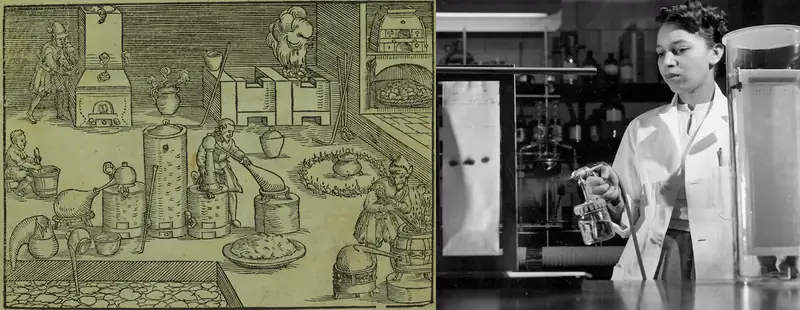
From alchemy came the historical progressions that led to modern chemistry: the isolation of drugs from natural sources, such as plants and animals. But while many of the substances extracted or processed from those natural sources were critical in the treatment of diseases, many were scarce. For example, progesterone, which is critical to women's health, became available as a medicine in 1935, but its animal sources produced extremely small quantities, limiting its availability and increasing its expense. Likewise, in the 1940s, cortisone came into use to treat arthritis and other disorders and injuries, but it took a 36-step process to synthesize. Chemist Percy Lavon Julian turned to a more plentiful source: soybeans. Previously, Julian had developed a lab to isolate soy protein, which was used in firefighting among other applications. He focused on using the soy sterols—substances mostly used in plant membranes—and was able to quickly produce progesterone and later testosterone and other hormones. He later developed a process to do the same for cortisone, and laid the groundwork for modern drug design. Since soybeans and similar plant sources were extremely plentiful, the drugs soon became widely available, saving many lives.
Chemistry: The Central Science¶
Chemistry is sometimes referred to as “the central science” due to its interconnectedness with a vast array of other STEM disciplines (STEM stands for areas of study in the science, technology, engineering, and math fields). Chemistry and the language of chemists play vital roles in biology, medicine, materials science, forensics, environmental science, and many other fields (Figure 1.3). The basic principles of physics are essential for understanding many aspects of chemistry, and there is extensive overlap between many subdisciplines within the two fields, such as chemical physics and nuclear chemistry. Mathematics, computer science, and information theory provide important tools that help us calculate, interpret, describe, and generally make sense of the chemical world. Biology and chemistry converge in biochemistry, which is crucial to understanding the many complex factors and processes that keep living organisms (such as us) alive. Chemical engineering, materials science, and nanotechnology combine chemical principles and empirical findings to produce useful substances, ranging from gasoline to fabrics to electronics. Agriculture, food science, veterinary science, and brewing and wine making help provide sustenance in the form of food and drink to the world’s population. Medicine, pharmacology, biotechnology, and botany identify and produce substances that help keep us healthy. Environmental science, geology, oceanography, and atmospheric science incorporate many chemical ideas to help us better understand and protect our physical world. Chemical ideas are used to help understand the universe in astronomy and cosmology.
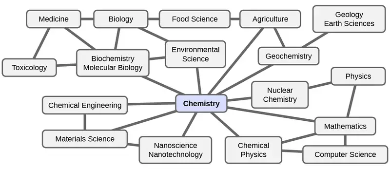
What are some changes in matter that are essential to daily life? Digesting and assimilating food, synthesizing polymers that are used to make clothing, containers, cookware, and credit cards, and refining crude oil into gasoline and other products are just a few examples. As you proceed through this course, you will discover many different examples of changes in the composition and structure of matter, how to classify these changes and how they occurred, their causes, the changes in energy that accompany them, and the principles and laws involved. As you learn about these things, you will be learning chemistry, the study of the composition, properties, and interactions of matter. The practice of chemistry is not limited to chemistry books or laboratories: It happens whenever someone is involved in changes in matter or in conditions that may lead to such changes.
The Scientific Method¶
Chemistry is a science based on observation and experimentation. Doing chemistry involves attempting to answer questions and explain observations in terms of the laws and theories of chemistry, using procedures that are accepted by the scientific community. There is no single route to answering a question or explaining an observation, but there is an aspect common to every approach: Each uses knowledge based on experiments that can be reproduced to verify the results. Some routes involve a hypothesis, a tentative explanation of observations that acts as a guide for gathering and checking information. A hypothesis is tested by experimentation, calculation, and/or comparison with the experiments of others and then refined as needed.
Some hypotheses are attempts to explain the behavior that is summarized in laws. The laws of science summarize a vast number of experimental observations, and describe or predict some facet of the natural world. If such a hypothesis turns out to be capable of explaining a large body of experimental data, it can reach the status of a theory. Scientific theories are well-substantiated, comprehensive, testable explanations of particular aspects of nature. Theories are accepted because they provide satisfactory explanations, but they can be modified if new data become available. The path of discovery that leads from question and observation to law or hypothesis to theory, combined with experimental verification of the hypothesis and any necessary modification of the theory, is called the scientific method (Figure 1.4).
![In this flowchart, the observation and curiosity box has an arrow pointing to a box labeled form hypothesis; make prediction. A curved arrow labeled next connects this box to a box labeled perform experiment; make more observations. Another arrow points back to the box that says form hypothesis; make prediction. This arrow is labeled results not consistent with prediction. Another arrow, labeled results are consistent with prediction points from the perform experiment box to a box labeled contributes to body of knowledge. However, an arrow also points from contributes to body of knowledge back to the form hypothesis; make prediction box. This arrow is labeled further testing does not support hypothesis. There are also two other arrows leading out from contributes to body of knowledge. One arrow is labeled much additional testing yields constant observations. This leads to the observation becomes law box. The other arrow is labeled much additional testing supports hypothesis. This arrow leads to the hypothesis becomes theory box.](img/cnx-chem-01-01-scimethod.webp)
The Domains of Chemistry¶
Chemists study and describe the behavior of matter and energy in three different domains: macroscopic, microscopic, and symbolic. These domains provide different ways of considering and describing chemical behavior.
Macro is a Greek word that means “large.” The macroscopic domain is familiar to us: It is the realm of everyday things that are large enough to be sensed directly by human sight or touch. In daily life, this includes the food you eat and the breeze you feel on your face. The macroscopic domain includes everyday and laboratory chemistry, where we observe and measure physical and chemical properties such as density, solubility, and flammability.
Micro comes from Greek and means “small.” The microscopic domain of chemistry is often visited in the imagination. Some aspects of the microscopic domain are visible through standard optical microscopes, for example, many biological cells. More sophisticated instruments are capable of imaging even smaller entities such as molecules and atoms (see Figure 1.5 (b)).
However, most of the subjects in the microscopic domain of chemistry are too small to be seen even with the most advanced microscopes and may only be pictured in the mind. Other components of the microscopic domain include ions and electrons, protons and neutrons, and chemical bonds, each of which is far too small to see.
The symbolic domain contains the specialized language used to represent components of the macroscopic and microscopic domains. Chemical symbols (such as those used in the periodic table), chemical formulas, and chemical equations are part of the symbolic domain, as are graphs, drawings, and calculations. These symbols play an important role in chemistry because they help interpret the behavior of the macroscopic domain in terms of the components of the microscopic domain. One of the challenges for students learning chemistry is recognizing that the same symbols can represent different things in the macroscopic and microscopic domains, and one of the features that makes chemistry fascinating is the use of a domain that must be imagined to explain behavior in a domain that can be observed.
A helpful way to understand the three domains is via the essential and ubiquitous substance of water. That water is a liquid at moderate temperatures, will freeze to form a solid at lower temperatures, and boil to form a gas at higher temperatures (Figure 1.5) are macroscopic observations. But some properties of water fall into the microscopic domain—what cannot be observed with the naked eye. The description of water as comprising two hydrogen atoms and one oxygen atom, and the explanation of freezing and boiling in terms of attractions between these molecules, is within the microscopic arena. The formula H2O, which can describe water at either the macroscopic or microscopic levels, is an example of the symbolic domain. The abbreviations (g) for gas, (s) for solid, and (l) for liquid are also symbolic.
![Figure A shows a photo of an iceberg floating in a sea has three arrows. Each arrow points to figure B, which contains three diagrams showing how the water molecules are organized in the air, ice, and sea. In the air, which contains the gaseous form of water, H subscript 2 O gas, the water molecules are disconnected and widely spaced. In the ice, which is the solid form of water, H subscript 2 O solid, the water molecules are bonded together into rings, with each ring containing six water molecules. Three of these rings are connected to each other. In the sea, which is the liquid form of water, H subscript 2 O liquid, the water molecules are very densely packed. The molecules are not bonded together.](img/cnx-chem-01-01-waterdom.webp)
1.2 Phases and Classification of Matter¶
Learning Objectives
By the end of this section, you will be able to:
- Describe the basic properties of each physical state of matter: solid, liquid, and gas
- Distinguish between mass and weight
- Apply the law of conservation of matter
- Classify matter as an element, compound, homogeneous mixture, or heterogeneous mixture with regard to its physical state and composition
- Define and give examples of atoms and molecules
Matter is defined as anything that occupies space and has mass, and it is all around us. Solids and liquids are more obviously matter: We can see that they take up space, and their weight tells us that they have mass. Gases are also matter; if gases did not take up space, a balloon would not inflate (increase its volume) when filled with gas.
Solids, liquids, and gases are the three states of matter commonly found on earth (Figure 1.6). A solid is rigid and possesses a definite shape. A liquid flows and takes the shape of its container, except that it forms a flat or slightly curved upper surface when acted upon by gravity. (In zero gravity, liquids assume a spherical shape.) Both liquid and solid samples have volumes that are very nearly independent of pressure. A gas takes both the shape and volume of its container.
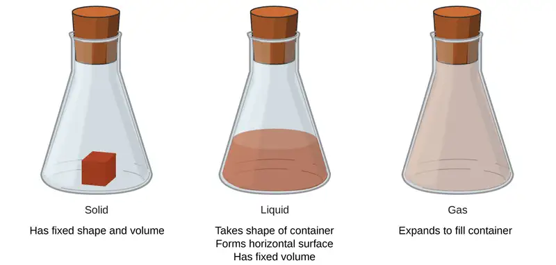
A fourth state of matter, plasma, occurs naturally in the interiors of stars. A plasma is a gaseous state of matter that contains appreciable numbers of electrically charged particles (Figure 1.7). The presence of these charged particles imparts unique properties to plasmas that justify their classification as a state of matter distinct from gases. In addition to stars, plasmas are found in some other high-temperature environments (both natural and man-made), such as lightning strikes, certain television screens, and specialized analytical instruments used to detect trace amounts of metals.
Link to Learning
In a tiny cell in a plasma television, the plasma emits ultraviolet light, which in turn causes the display at that location to appear a specific color. The composite of these tiny dots of color makes up the image that you see. Watch this video to learn more about plasma and the places you encounter it.
Some samples of matter appear to have properties of solids, liquids, and/or gases at the same time. This can occur when the sample is composed of many small pieces. For example, we can pour sand as if it were a liquid because it is composed of many small grains of solid sand. Matter can also have properties of more than one state when it is a mixture, such as with clouds. Clouds appear to behave somewhat like gases, but they are actually mixtures of air (gas) and tiny particles of water (liquid or solid).
The mass of an object is a measure of the amount of matter in it. One way to measure an object’s mass is to measure the force it takes to accelerate the object. It takes much more force to accelerate a car than a bicycle because the car has much more mass. A more common way to determine the mass of an object is to use a balance to compare its mass with a standard mass.
Although weight is related to mass, it is not the same thing. Weight refers to the force that gravity exerts on an object. This force is directly proportional to the mass of the object. The weight of an object changes as the force of gravity changes, but its mass does not. An astronaut’s mass does not change just because she goes to the moon. But her weight on the moon is only one-sixth her earth-bound weight because the moon’s gravity is only one-sixth that of the earth’s. She may feel “weightless” during her trip when she experiences negligible external forces (gravitational or any other), although she is, of course, never “massless.”
The law of conservation of matter summarizes many scientific observations about matter: It states that there is no detectable change in the total quantity of matter present when matter converts from one type to another (a chemical change) or changes among solid, liquid, or gaseous states (a physical change). Brewing beer and the operation of batteries provide examples of the conservation of matter (Figure 1.8). During the brewing of beer, the ingredients (water, yeast, grains, malt, hops, and sugar) are converted into beer (water, alcohol, carbonation, and flavoring substances) with no actual loss of substance. This is most clearly seen during the bottling process, when glucose turns into ethanol and carbon dioxide, and the total mass of the substances does not change. This can also be seen in a lead-acid car battery: The original substances (lead, lead oxide, and sulfuric acid), which are capable of producing electricity, are changed into other substances (lead sulfate and water) that do not produce electricity, with no change in the actual amount of matter.
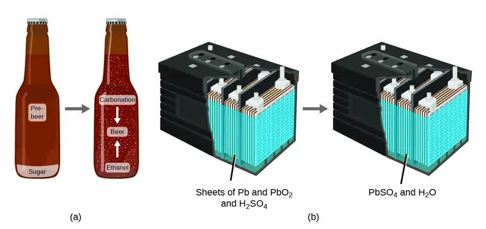
Although this conservation law holds true for all conversions of matter, convincing examples are few and far between because, outside of the controlled conditions in a laboratory, we seldom collect all of the material that is produced during a particular conversion. For example, when you eat, digest, and assimilate food, all of the matter in the original food is preserved. But because some of the matter is incorporated into your body, and much is excreted as various types of waste, it is challenging to verify by measurement.
Classifying Matter¶
Matter can be classified into several categories. Two broad categories are mixtures and pure substances. A pure substance has a constant composition. All specimens of a pure substance have exactly the same makeup and properties. Any sample of sucrose (table sugar) consists of 42.1% carbon, 6.5% hydrogen, and 51.4% oxygen by mass. Any sample of sucrose also has the same physical properties, such as melting point, color, and sweetness, regardless of the source from which it is isolated.
Pure substances may be divided into two classes: elements and compounds. Pure substances that cannot be broken down into simpler substances by chemical changes are called elements. Iron, silver, gold, aluminum, sulfur, oxygen, and copper are familiar examples of the more than 100 known elements, of which about 90 occur naturally on the earth, and two dozen or so have been created in laboratories.
Pure substances that are comprised of two or more elements are called compounds. Compounds may be broken down by chemical changes to yield either elements or other compounds, or both. Mercury(II) oxide, an orange, crystalline solid, can be broken down by heat into the elements mercury and oxygen (Figure 1.9). When heated in the absence of air, the compound sucrose is broken down into the element carbon and the compound water. (The initial stage of this process, when the sugar is turning brown, is known as caramelization—this is what imparts the characteristic sweet and nutty flavor to caramel apples, caramelized onions, and caramel). Silver(I) chloride is a white solid that can be broken down into its elements, silver and chlorine, by absorption of light. This property is the basis for the use of this compound in photographic films and photochromic eyeglasses (those with lenses that darken when exposed to light).
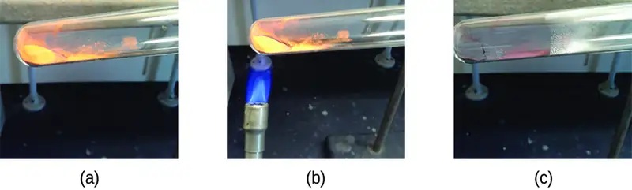
Link to Learning
Many compounds break down when heated. This site shows the breakdown of mercury oxide, HgO. You can also view an example of the photochemical decomposition of silver chloride (AgCl), the basis of early photography.
The properties of combined elements are different from those in the free, or uncombined, state. For example, white crystalline sugar (sucrose) is a compound resulting from the chemical combination of the element carbon, which is a black solid in one of its uncombined forms, and the two elements hydrogen and oxygen, which are colorless gases when uncombined. Free sodium, an element that is a soft, shiny, metallic solid, and free chlorine, an element that is a yellow-green gas, combine to form sodium chloride (table salt), a compound that is a white, crystalline solid.
A mixture is composed of two or more types of matter that can be present in varying amounts and can be separated by physical changes, such as evaporation (you will learn more about this later). A mixture with a composition that varies from point to point is called a heterogeneous mixture. Italian dressing is an example of a heterogeneous mixture (Figure 1.10). Its composition can vary because it may be prepared from varying amounts of oil, vinegar, and herbs. It is not the same from point to point throughout the mixture—one drop may be mostly vinegar, whereas a different drop may be mostly oil or herbs because the oil and vinegar separate and the herbs settle. Other examples of heterogeneous mixtures are chocolate chip cookies (we can see the separate bits of chocolate, nuts, and cookie dough) and granite (we can see the quartz, mica, feldspar, and more).
A homogeneous mixture, also called a solution, exhibits a uniform composition and appears visually the same throughout. An example of a solution is a sports drink, consisting of water, sugar, coloring, flavoring, and electrolytes mixed together uniformly (Figure 1.10). Each drop of a sports drink tastes the same because each drop contains the same amounts of water, sugar, and other components. Note that the composition of a sports drink can vary—it could be made with somewhat more or less sugar, flavoring, or other components, and still be a sports drink. Other examples of homogeneous mixtures include air, maple syrup, gasoline, and a solution of salt in water.
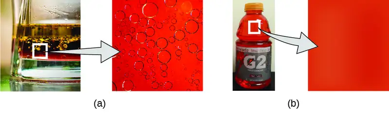
Although there are just over 100 elements, tens of millions of chemical compounds result from different combinations of these elements. Each compound has a specific composition and possesses definite chemical and physical properties that distinguish it from all other compounds. And, of course, there are innumerable ways to combine elements and compounds to form different mixtures. A summary of how to distinguish between the various major classifications of matter is shown in (Figure 1.11).
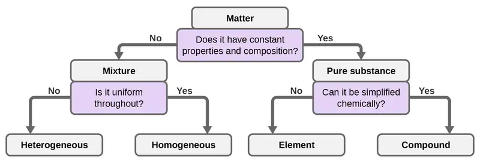
Eleven elements make up about 99% of the earth’s crust and atmosphere (Table 1.1). Oxygen constitutes nearly one-half and silicon about one-quarter of the total quantity of these elements. A majority of elements on earth are found in chemical combinations with other elements; about one-quarter of the elements are also found in the free state.
Table 1.1
| Elemental Composition of Earth | |||||
|---|---|---|---|---|---|
| Element | Symbol | Percent Mass | Element | Symbol | Percent Mass |
| oxygen | O | 49.20 | chlorine | Cl | 0.19 |
| silicon | Si | 25.67 | phosphorus | P | 0.11 |
| aluminum | Al | 7.50 | manganese | Mn | 0.09 |
| iron | Fe | 4.71 | carbon | C | 0.08 |
| calcium | Ca | 3.39 | sulfur | S | 0.06 |
| sodium | Na | 2.63 | barium | Ba | 0.04 |
| potassium | K | 2.40 | nitrogen | N | 0.03 |
| magnesium | Mg | 1.93 | fluorine | F | 0.03 |
| hydrogen | H | 0.87 | strontium | Sr | 0.02 |
| titanium | Ti | 0.58 | all others | - | 0.47 |
Atoms and Molecules¶
An atom is the smallest particle of an element that has the properties of that element and can enter into a chemical combination. Consider the element gold, for example. Imagine cutting a gold nugget in half, then cutting one of the halves in half, and repeating this process until a piece of gold remained that was so small that it could not be cut in half (regardless of how tiny your knife may be). This minimally sized piece of gold is an atom (from the Greek atomos, meaning “indivisible”) (Figure 1.12). This atom would no longer be gold if it were divided any further.
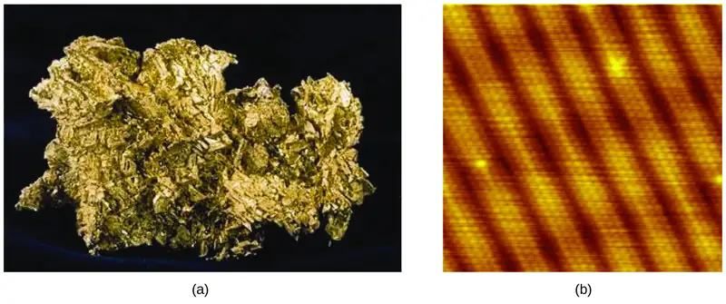
The first suggestion that matter is composed of atoms is attributed to the Greek philosophers Leucippus and Democritus, who developed their ideas in the 5th century BCE. However, it was not until the early nineteenth century that John Dalton (1766–1844), a British schoolteacher with a keen interest in science, supported this hypothesis with quantitative measurements. Since that time, repeated experiments have confirmed many aspects of this hypothesis, and it has become one of the central theories of chemistry. Other aspects of Dalton’s atomic theory are still used but with minor revisions (details of Dalton’s theory are provided in the chapter on atoms and molecules).
An atom is so small that its size is difficult to imagine. One of the smallest things we can see with our unaided eye is a single thread of a spider web: These strands are about 1/10,000 of a centimeter (0.0001 cm) in diameter. Although the cross-section of one strand is almost impossible to see without a microscope, it is huge on an atomic scale. A single carbon atom in the web has a diameter of about 0.000000015 centimeter, and it would take about 7000 carbon atoms to span the diameter of the strand. To put this in perspective, if a carbon atom were the size of a dime, the cross-section of one strand would be larger than a football field, which would require about 150 million carbon atom “dimes” to cover it. (Figure 1.13) shows increasingly close microscopic and atomic-level views of ordinary cotton.
![Figure A shows a puffy white cotton boll growing on a brown twig. Figure B shows a magnified cotton strand. The strand appears transparent but contains dark areas within its interior. Figure C shows the surface of several crisscrossing and overlapping cotton fibers. Its surface is rough along the edges but smooth near the center of each strand. Figure D shows three strands of molecules connected into three vertical chains. Each strand contains about five molecules. Figure E shows that the cotton molecule contains about a dozen atoms. The black carbon atoms form rings that are connected by red oxygen atoms. Many of the carbon atoms are also bonded to hydrogen atoms, shown as white balls, or other oxygen atoms.](img/cnx-chem-01-02-cellulose.webp)
An atom is so light that its mass is also difficult to imagine. A billion lead atoms (1,000,000,000 atoms) weigh about 3 \(\times\) 10−13 grams, a mass that is far too light to be weighed on even the world’s most sensitive balances. It would require over 300,000,000,000,000 lead atoms (300 trillion, or 3 \(\times\) 1014) to be weighed, and they would weigh only 0.0000001 gram.
It is rare to find collections of individual atoms. Only a few elements, such as the gases helium, neon, and argon, consist of a collection of individual atoms that move about independently of one another. Other elements, such as the gases hydrogen, nitrogen, oxygen, and chlorine, are composed of units that consist of pairs of atoms (Figure 1.14). One form of the element phosphorus consists of units composed of four phosphorus atoms. The element sulfur exists in various forms, one of which consists of units composed of eight sulfur atoms. These units are called molecules. A molecule consists of two or more atoms joined by strong forces called chemical bonds. The atoms in a molecule move around as a unit, much like the cans of soda in a six-pack or a bunch of keys joined together on a single key ring. A molecule may consist of two or more identical atoms, as in the molecules found in the elements hydrogen, oxygen, and sulfur, or it may consist of two or more different atoms, as in the molecules found in water. Each water molecule is a unit that contains two hydrogen atoms and one oxygen atom. Each glucose molecule is a unit that contains 6 carbon atoms, 12 hydrogen atoms, and 6 oxygen atoms. Like atoms, molecules are incredibly small and light. If an ordinary glass of water were enlarged to the size of the earth, the water molecules inside it would be about the size of golf balls.
![The hydrogen molecule, H subscript 2, is shown as two small, white balls bonded together. The oxygen molecule O subscript 2, is shown as two red balls bonded together. The phosphorous molecule, P subscript 4, is shown as four orange balls bonded tightly together. The sulfur molecule, S subscript 8, is shown as 8 yellow balls linked together. Water molecules, H subscript 2 O, consist of one red oxygen atom bonded to two smaller white hydrogen atoms. The hydrogen atoms are at an angle on the oxygen molecule. Carbon dioxide, C O subscript 2, consists of one carbon atom and two oxygen atoms. One oxygen atom is bonded to the carbon’s right side and the other oxygen is bonded to the carbon’s left side. Glucose, C subscript 6 H subscript 12 O subscript 6, contains a chain of carbon atoms that have attached oxygen or hydrogen atoms.](img/cnx-chem-01-02-molecules.webp)
Chemistry in Everyday Life: Decomposition of Water / Production of Hydrogen
Water consists of the elements hydrogen and oxygen combined in a 2 to 1 ratio. Water can be broken down into hydrogen and oxygen gases by the addition of energy. One way to do this is with a battery or power supply, as shown in (Figure 1.15).
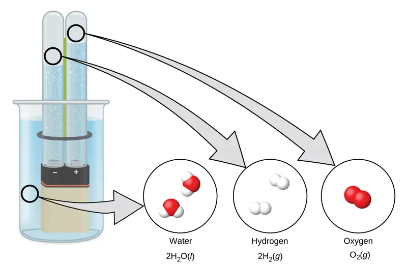
The breakdown of water involves a rearrangement of the atoms in water molecules into different molecules, each composed of two hydrogen atoms and two oxygen atoms, respectively. Two water molecules form one oxygen molecule and two hydrogen molecules. The representation for what occurs, \(2\text{H}_{2}\text{O}(l)\:\longrightarrow\:2\text{H}_{2}(g)+\text{O}_{2}(g){,}\) will be explored in more depth in later chapters.
The two gases produced have distinctly different properties. Oxygen is not flammable but is required for combustion of a fuel, and hydrogen is highly flammable and a potent energy source. How might this knowledge be applied in our world? One application involves research into more fuel-efficient transportation. Fuel-cell vehicles (FCV) run on hydrogen instead of gasoline (Figure 1.16). They are more efficient than vehicles with internal combustion engines, are nonpolluting, and reduce greenhouse gas emissions, making us less dependent on fossil fuels. FCVs are not yet economically viable, however, and current hydrogen production depends on natural gas. If we can develop a process to economically decompose water, or produce hydrogen in another environmentally sound way, FCVs may be the way of the future.
![The fuel cell consists of a proton exchange membrane sandwiched between an anode and a cathode. Hydrogen gas enters the battery near the anode. Oxygen gas enters the battery near the cathode. The entering hydrogen gas is broken up into single white spheres that each have a positive charge. These are protons. The protons repel negatively-charged electrons within the anode. These electrons travel through a circuit, providing electricity to anything attached to the battery. The protons continue through the proton exchange membrane and through the cathode to reach the oxygen gas molecules at the opposite end of the battery. There, the oxygen atoms split up into single red spheres. Each oxygen atom takes on two of the incoming protons to form a water molecule.](img/cnx-chem-01-01-fuelcell.webp)
Chemistry in Everyday Life: Chemistry of Cell Phones
Imagine how different your life would be without cell phones (Figure 1.17) and other smart devices. Cell phones are made from numerous chemical substances, which are extracted, refined, purified, and assembled using an extensive and in-depth understanding of chemical principles. About 30% of the elements that are found in nature are found within a typical smart phone. The case/body/frame consists of a combination of sturdy, durable polymers composed primarily of carbon, hydrogen, oxygen, and nitrogen [acrylonitrile butadiene styrene (ABS) and polycarbonate thermoplastics], and light, strong, structural metals, such as aluminum, magnesium, and iron. The display screen is made from a specially toughened glass (silica glass strengthened by the addition of aluminum, sodium, and potassium) and coated with a material to make it conductive (such as indium tin oxide). The circuit board uses a semiconductor material (usually silicon); commonly used metals like copper, tin, silver, and gold; and more unfamiliar elements such as yttrium, praseodymium, and gadolinium. The battery relies upon lithium ions and a variety of other materials, including iron, cobalt, copper, polyethylene oxide, and polyacrylonitrile.
![A cell phone is labeled to show what its components are made of. The case components are made of polymers such as A B S and or metals such as aluminum, iron, and magnesium. The processor components are made of silicon, common metals such as copper, tin and gold, and uncommon elements such as yttrium and gadolinium. The screen components are made of silicon oxide, also known as glass. The glass is strengthened by the addition of aluminum, sodium, and potassium. The battery components contain lithium combined with other metals such as cobalt, iron, and copper.](img/cnx-chem-01-02-cellphone.webp)
1.3 Physical and Chemical Properties¶
Learning Objectives
By the end of this section, you will be able to:
- Identify properties of and changes in matter as physical or chemical
- Identify properties of matter as extensive or intensive
The characteristics that distinguish one substance from another are called properties. A physical property is a characteristic of matter that is not associated with a change in its chemical composition. Familiar examples of physical properties include density, color, hardness, melting and boiling points, and electrical conductivity. Some physical properties, such as density and color, may be observed without changing the physical state of the matter. Other physical properties, such as the melting temperature of iron or the freezing temperature of water, can only be observed as matter undergoes a physical change. A physical change is a change in the state or properties of matter without any accompanying change in the chemical identities of the substances contained in the matter. Physical changes are observed when wax melts, when sugar dissolves in coffee, and when steam condenses into liquid water (Figure 1.18). Other examples of physical changes include magnetizing and demagnetizing metals (as is done with common antitheft security tags) and grinding solids into powders (which can sometimes yield noticeable changes in color). In each of these examples, there is a change in the physical state, form, or properties of the substance, but no change in its chemical composition.
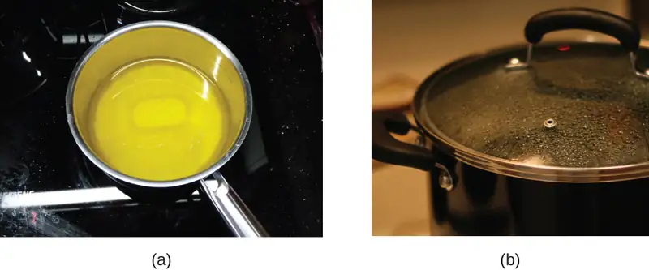
The ability to change from one type of matter into another (or the inability to change) is a chemical property. Examples of chemical properties include flammability, toxicity, acidity, and many other types of reactivity. Iron, for example, combines with oxygen in the presence of water to form rust; chromium does not oxidize (Figure 1.19). Nitroglycerin is very dangerous because it explodes easily; neon poses almost no hazard because it is very unreactive.
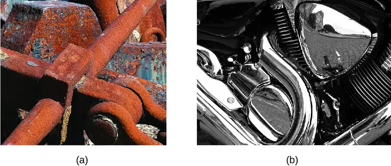
A chemical change always produces one or more types of matter that differ from the matter present before the change. The formation of rust is a chemical change because rust is a different kind of matter than the iron, oxygen, and water present before the rust formed. The explosion of nitroglycerin is a chemical change because the gases produced are very different kinds of matter from the original substance. Other examples of chemical changes include reactions that are performed in a lab (such as copper reacting with nitric acid), all forms of combustion (burning), and food being cooked, digested, or rotting (Figure 1.20).
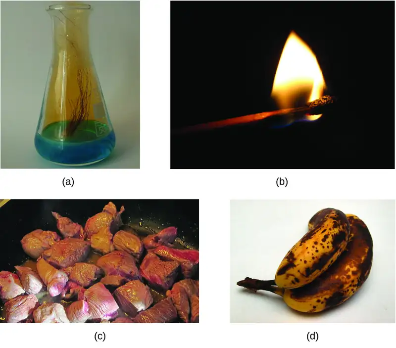
Properties of matter fall into one of two categories. If the property depends on the amount of matter present, it is an extensive property. The mass and volume of a substance are examples of extensive properties; for instance, a gallon of milk has a larger mass than a cup of milk. The value of an extensive property is directly proportional to the amount of matter in question. If the property of a sample of matter does not depend on the amount of matter present, it is an intensive property. Temperature is an example of an intensive property. If the gallon and cup of milk are each at 20 °C (room temperature), when they are combined, the temperature remains at 20 °C. As another example, consider the distinct but related properties of heat and temperature. A drop of hot cooking oil spattered on your arm causes brief, minor discomfort, whereas a pot of hot oil yields severe burns. Both the drop and the pot of oil are at the same temperature (an intensive property), but the pot clearly contains much more heat (extensive property).
Chemistry in Everyday Life: Hazard Diamond
You may have seen the symbol shown in Figure 1.21 on containers of chemicals in a laboratory or workplace. Sometimes called a “fire diamond” or “hazard diamond,” this chemical hazard diamond provides valuable information that briefly summarizes the various dangers of which to be aware when working with a particular substance.
![The diamond is subdivided into four smaller diamonds. The upper diamond is colored red and is associated with fire hazards. The numbers in the fire hazard diamond range from 0 to 4. As the numbers increase, the chemical’s flash point decreases. 0 indicates a substance that will not burn, 1 indicates a substance with a flashpoint above 200 degrees Fahrenheit, 2 indicates a substance with a flashpoint above 100 degrees Fahrenheit and not exceeding 200 degrees Fahrenheit, 3 indicates a substance with a flashpoint below 100 degrees Fahrenheit, and 4 indicates a substance with a flashpoint below 73 degrees Fahrenheit. The right-hand diamond is yellow and is associated with reactivity. The reactivity numbers range from 0 to 4. 0 indicates a stable chemical, 1 indicates a chemical that is unstable if heated, 2 indicates the possibility of a violent chemical change, 3 indicates that shock and heat may detonate the chemical and 4 indicates that the chemical may detonate. The lower diamond is white and is associated with specific hazards. These contain abbreviations that describe specific hazardous characteristic of the chemical. O X indicates an oxidizer, A C I D indicates an acid, A L K indicates an alkali, C O R indicates corrosive, a W with a line through it indicates use no water, and a symbol of a dot surrounded by three triangles indicates radioactive. The leftmost diamond is blue and is associated with health hazards. The numbers in the health hazard diamond range from 0 to 4. 0 indicates a normal material, 1 indicates slightly hazardous, 2 indicates hazardous, 3 indicates extreme danger, and 4 indicates deadly.](img/cnx-chem-01-03-hazdiamond.webp)
The National Fire Protection Agency (NFPA) 704 Hazard Identification System was developed by NFPA to provide safety information about certain substances. The system details flammability, reactivity, health, and other hazards. Within the overall diamond symbol, the top (red) diamond specifies the level of fire hazard (temperature range for flash point). The blue (left) diamond indicates the level of health hazard. The yellow (right) diamond describes reactivity hazards, such as how readily the substance will undergo detonation or a violent chemical change. The white (bottom) diamond points out special hazards, such as if it is an oxidizer (which allows the substance to burn in the absence of air/oxygen), undergoes an unusual or dangerous reaction with water, is corrosive, acidic, alkaline, a biological hazard, radioactive, and so on. Each hazard is rated on a scale from 0 to 4, with 0 being no hazard and 4 being extremely hazardous.
While many elements differ dramatically in their chemical and physical properties, some elements have similar properties. For example, many elements conduct heat and electricity well, whereas others are poor conductors. These properties can be used to sort the elements into three classes: metals (elements that conduct well), nonmetals (elements that conduct poorly), and metalloids (elements that have intermediate conductivities).
The periodic table is a table of elements that places elements with similar properties close together (Figure 1.22). You will learn more about the periodic table as you continue your study of chemistry.
![On this depiction of the periodic table, the metals are indicated with a yellow color and dominate the left two thirds of the periodic table. The nonmetals are colored peach and are largely confined to the upper right area of the table, with the exception of hydrogen, H, which is located in the extreme upper left of the table. The metalloids are colored purple and form a diagonal border between the metal and nonmetal areas of the table. Group 13 contains both metals and metalloids. Group 17 contains both nonmetals and metalloids. Groups 14 through 16 contain at least one representative of a metal, a metalloid, and a nonmetal. A key shows that, at room temperature, metals are solids, metalloids are liquids, and nonmetals are gases.](img/cnx-chem-01-03-periodicpu.webp)
1.4 Measurements¶
Learning Objectives
By the end of this section, you will be able to:
- Explain the process of measurement
- Identify the three basic parts of a quantity
- Describe the properties and units of length, mass, volume, density, temperature, and time
- Perform basic unit calculations and conversions in the metric and other unit systems
Measurements provide much of the information that informs the hypotheses, theories, and laws describing the behavior of matter and energy in both the macroscopic and microscopic domains of chemistry. Every measurement provides three kinds of information: the size or magnitude of the measurement (a number); a standard of comparison for the measurement (a unit); and an indication of the uncertainty of the measurement. While the number and unit are explicitly represented when a quantity is written, the uncertainty is an aspect of the measurement result that is more implicitly represented and will be discussed later.
The number in the measurement can be represented in different ways, including decimal form and scientific notation. (Scientific notation is also known as exponential notation; a review of this topic can be found in Appendix B.) For example, the maximum takeoff weight of a Boeing 777-200ER airliner is 298,000 kilograms, which can also be written as 2.98 \(\times\) 105 kg. The mass of the average mosquito is about 0.0000025 kilograms, which can be written as 2.5 \(\times\) 10−6 kg.
Units, such as liters, pounds, and centimeters, are standards of comparison for measurements. A 2-liter bottle of a soft drink contains a volume of beverage that is twice that of the accepted volume of 1 liter. The meat used to prepare a 0.25-pound hamburger weighs one-fourth as much as the accepted weight of 1 pound. Without units, a number can be meaningless, confusing, or possibly life threatening. Suppose a doctor prescribes phenobarbital to control a patient’s seizures and states a dosage of “100” without specifying units. Not only will this be confusing to the medical professional giving the dose, but the consequences can be dire: 100 mg given three times per day can be effective as an anticonvulsant, but a single dose of 100 g is more than 10 times the lethal amount.
The measurement units for seven fundamental properties (“base units”) are listed in Table 1.2. The standards for these units are fixed by international agreement, and they are called the International System of Units or SI Units (from the French, Le Système International d’Unités). SI units have been used by the United States National Institute of Standards and Technology (NIST) since 1964. Units for other properties may be derived from these seven base units.
Table 1.2
| Base Units of the SI System | ||
|---|---|---|
| Property Measured | Name of Unit | Symbol of Unit |
| length | meter | m |
| mass | kilogram | kg |
| time | second | s |
| temperature | kelvin | K |
| electric current | ampere | A |
| amount of substance | mole | mol |
| luminous intensity | candela | cd |
Everyday measurement units are often defined as fractions or multiples of other units. Milk is commonly packaged in containers of 1 gallon (4 quarts), 1 quart (0.25 gallon), and one pint (0.5 quart). This same approach is used with SI units, but these fractions or multiples are always powers of 10. Fractional or multiple SI units are named using a prefix and the name of the base unit. For example, a length of 1000 meters is also called a kilometer because the prefix kilo means “one thousand,” which in scientific notation is 103 (1 kilometer = 1000 m = 103 m). The prefixes used and the powers to which 10 are raised are listed in Table 1.3.
Table 1.3
| Common Unit Prefixes | |||
|---|---|---|---|
| Prefix | Symbol | Factor | Example |
| femto | f | 10−15 | 1 femtosecond (fs) = 1 \(\times\) 10−15 s (0.000000000000001 s) |
| pico | p | 10−12 | 1 picometer (pm) = 1 \(\times\) 10−12 m (0.000000000001 m) |
| nano | n | 10−9 | 4 nanograms (ng) = 4 \(\times\) 10−9 g (0.000000004 g) |
| micro | µ | 10−6 | 1 microliter (μL) = 1 \(\times\) 10−6 L (0.000001 L) |
| milli | m | 10−3 | 2 millimoles (mmol) = 2 \(\times\) 10−3 mol (0.002 mol) |
| centi | c | 10−2 | 7 centimeters (cm) = 7 \(\times\) 10−2 m (0.07 m) |
| deci | d | 10−1 | 1 deciliter (dL) = 1 \(\times\) 10−1 L (0.1 L ) |
| kilo | k | 103 | 1 kilometer (km) = 1 \(\times\) 103 m (1000 m) |
| mega | M | 106 | 3 megahertz (MHz) = 3 \(\times\) 106 Hz (3,000,000 Hz) |
| giga | G | 109 | 8 gigayears (Gyr) = 8 \(\times\) 109 yr (8,000,000,000 yr) |
| tera | T | 1012 | 5 terawatts (TW) = 5 \(\times\) 1012 W (5,000,000,000,000 W) |
Link to Learning
Need a refresher or more practice with scientific notation? Visit this site to go over the basics of scientific notation.
SI Base Units¶
The initial units of the metric system, which eventually evolved into the SI system, were established in France during the French Revolution. The original standards for the meter and the kilogram were adopted there in 1799 and eventually by other countries. This section introduces four of the SI base units commonly used in chemistry. Other SI units will be introduced in subsequent chapters.
Length¶
The standard unit of length in both the SI and original metric systems is the meter (m). A meter was originally specified as 1/10,000,000 of the distance from the North Pole to the equator. It is now defined as the distance light in a vacuum travels in 1/299,792,458 of a second. A meter is about 3 inches longer than a yard (Figure 1.23); one meter is about 39.37 inches or 1.094 yards. Longer distances are often reported in kilometers (1 km = 1000 m = 103 m), whereas shorter distances can be reported in centimeters (1 cm = 0.01 m = 10−2 m) or millimeters (1 mm = 0.001 m = 10−3 m).
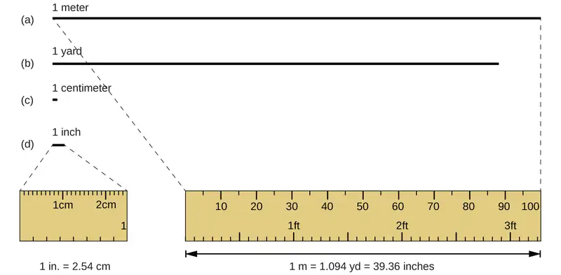
Mass¶
The standard unit of mass in the SI system is the kilogram (kg). The kilogram was previously defined by the International Union of Pure and Applied Chemistry (IUPAC) as the mass of a specific reference object. This object was originally one liter of pure water, and more recently it was a metal cylinder made from a platinum-iridium alloy with a height and diameter of 39 mm (Figure 1.24). In May 2019, this definition was changed to one that is based instead on precisely measured values of several fundamental physical constants.1. One kilogram is about 2.2 pounds. The gram (g) is exactly equal to 1/1000 of the mass of the kilogram (10−3 kg).
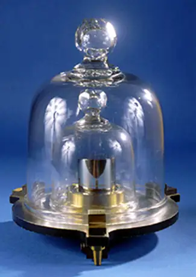
Temperature¶
Temperature is an intensive property. The SI unit of temperature is the kelvin (K). The IUPAC convention is to use kelvin (all lowercase) for the word, K (uppercase) for the unit symbol, and neither the word “degree” nor the degree symbol (°). The degree Celsius (°C) is also allowed in the SI system, with both the word “degree” and the degree symbol used for Celsius measurements. Celsius degrees are the same magnitude as those of kelvin, but the two scales place their zeros in different places. Water freezes at 273.15 K (0 °C) and boils at 373.15 K (100 °C), and normal human body temperature is approximately 310 K (37 °C). The conversion between these two units and the Fahrenheit scale will be discussed later in this chapter.
Time¶
The SI base unit of time is the second (s). Small and large time intervals can be expressed with the appropriate prefixes; for example, 3 microseconds = 0.000003 s = 3 \(\times\) 10−6 and 5 megaseconds = 5,000,000 s = 5 \(\times\) 106 s. Alternatively, hours, days, and years can be used.
Derived SI Units¶
We can derive many units from the seven SI base units. For example, we can use the base unit of length to define a unit of volume, and the base units of mass and length to define a unit of density.
Volume¶
Volume is the measure of the amount of space occupied by an object. The standard SI unit of volume is defined by the base unit of length (Figure 1.25). The standard volume is a cubic meter (m3), a cube with an edge length of exactly one meter. To dispense a cubic meter of water, we could build a cubic box with edge lengths of exactly one meter. This box would hold a cubic meter of water or any other substance.
A more commonly used unit of volume is derived from the decimeter (0.1 m, or 10 cm). A cube with edge lengths of exactly one decimeter contains a volume of one cubic decimeter (dm3). A liter (L) is the more common name for the cubic decimeter. One liter is about 1.06 quarts.
A cubic centimeter (cm3) is the volume of a cube with an edge length of exactly one centimeter. The abbreviation cc (for cubic centimeter) is often used by health professionals. A cubic centimeter is equivalent to a milliliter (mL) and is 1/1000 of a liter.
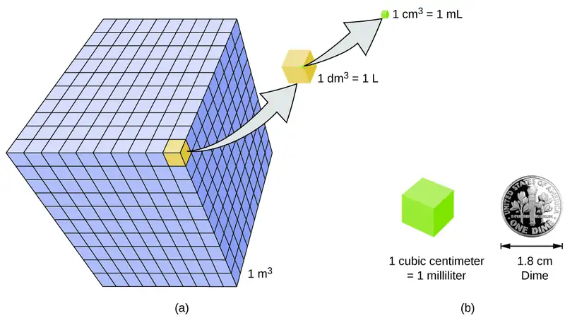
Density¶
We use the mass and volume of a substance to determine its density. Thus, the units of density are defined by the base units of mass and length.
The density of a substance is the ratio of the mass of a sample of the substance to its volume. The SI unit for density is the kilogram per cubic meter (kg/m3). For many situations, however, this is an inconvenient unit, and we often use grams per cubic centimeter (g/cm3) for the densities of solids and liquids, and grams per liter (g/L) for gases. Although there are exceptions, most liquids and solids have densities that range from about 0.7 g/cm3 (the density of gasoline) to 19 g/cm3 (the density of gold). The density of air is about 1.2 g/L. Table 1.4 shows the densities of some common substances.
Table 1.4
| Densities of Common Substances | ||
|---|---|---|
| Solids | Liquids | Gases (at 25 °C and 1 atm) |
| ice (at 0 °C) 0.92 g/cm3 | water 1.0 g/cm3 | dry air 1.20 g/L |
| oak (wood) 0.60–0.90 g/cm3 | ethanol 0.79 g/cm3 | oxygen 1.31 g/L |
| iron 7.9 g/cm3 | acetone 0.79 g/cm3 | nitrogen 1.14 g/L |
| copper 9.0 g/cm3 | glycerin 1.26 g/cm3 | carbon dioxide 1.80 g/L |
| lead 11.3 g/cm3 | olive oil 0.92 g/cm3 | helium 0.16 g/L |
| silver 10.5 g/cm3 | gasoline 0.70–0.77 g/cm3 | neon 0.83 g/L |
| gold 19.3 g/cm3 | mercury 13.6 g/cm3 | radon 9.1 g/L |
While there are many ways to determine the density of an object, perhaps the most straightforward method involves separately finding the mass and volume of the object, and then dividing the mass of the sample by its volume. In the following example, the object's mass is measured using a scale, but its volume is calculated geometrically from length measurements.
Example 1.1 Calculation of Density
Gold—in bricks, bars, and coins—has been a form of currency for centuries. In order to swindle people into paying for a brick of gold without actually investing in a brick of gold, people have considered filling the centers of hollow gold bricks with lead to fool buyers into thinking that the entire brick is gold. It does not work: Lead is a dense substance, but its density is not as great as that of gold, 19.3 g/cm3. What is the density of lead if a cube of lead has an edge length of 2.00 cm and a mass of 90.7 g?
Solution
The density of a substance can be calculated by dividing its mass by its volume. The volume of a cube is calculated by cubing the edge length.
(We will discuss the reason for rounding to the first decimal place in the next section.)
Check Your Learning
(a) To three decimal places, what is the volume of a cube (cm3) with an edge length of 0.843 cm?
(b) If the cube in part (a) is copper and has a mass of 5.34 g, what is the density of copper to two decimal places?
Answer:
(a) 0.599 cm3; (b) 8.91 g/cm3
Link to Learning
To learn more about the relationship between mass, volume, and density, use this interactive simulator to explore the density of different materials.
Example 1.2 Using Displacement of Water to Determine Density
This exercise uses a simulation to illustrate an alternative approach to the determination of density that involves measuring the object’s volume via displacement of water. Use the simulator to determine the densities iron and wood.
Solution
Click the “turn fluid into water” button in the simulator to adjust the density of liquid in the beaker to 1.00 g/mL. Remove the red block from the beaker and note the volume of water is 25.5 mL. Select the iron sample by clicking “iron” in the table of materials at the bottom of the screen, place the iron block on the balance pan, and observe its mass is 31.48 g. Transfer the iron block to the beaker and notice that it sinks, displacing a volume of water equal to its own volume and causing the water level to rise to 29.5 mL. The volume of the iron block is therefore:
The density of the iron is then calculated to be:
Remove the iron block from the beaker, change the block material to wood, and then repeat the mass and volume measurements. Unlike iron, the wood block does not sink in the water but instead floats on the water’s surface. To measure its volume, drag it beneath the water’s surface so that it is fully submerged.
Note: The sink versus float behavior illustrated in this example demonstrates the property of “buoyancy” (see end of chapter Exercise 42 and Exercise 43).
Check Your Learning
Following the water displacement approach, use the simulator to measure the density of the foam sample.
Answer:
0.230 g/mL
1.5 Measurement Uncertainty, Accuracy, and Precision¶
Learning Objectives
By the end of this section, you will be able to:
- Define accuracy and precision
- Distinguish exact and uncertain numbers
- Correctly represent uncertainty in quantities using significant figures
- Apply proper rounding rules to computed quantities
Counting is the only type of measurement that is free from uncertainty, provided the number of objects being counted does not change while the counting process is underway. The result of such a counting measurement is an example of an exact number. By counting the eggs in a carton, one can determine exactly how many eggs the carton contains. The numbers of defined quantities are also exact. By definition, 1 foot is exactly 12 inches, 1 inch is exactly 2.54 centimeters, and 1 gram is exactly 0.001 kilogram. Quantities derived from measurements other than counting, however, are uncertain to varying extents due to practical limitations of the measurement process used.
Significant Figures in Measurement¶
The numbers of measured quantities, unlike defined or directly counted quantities, are not exact. To measure the volume of liquid in a graduated cylinder, you should make a reading at the bottom of the meniscus, the lowest point on the curved surface of the liquid.
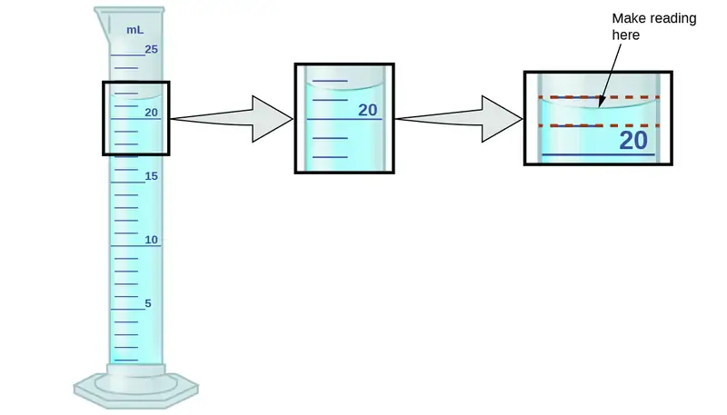
Refer to the illustration in Figure 1.26. The bottom of the meniscus in this case clearly lies between the 21 and 22 markings, meaning the liquid volume is certainly greater than 21 mL but less than 22 mL. The meniscus appears to be a bit closer to the 22-mL mark than to the 21-mL mark, and so a reasonable estimate of the liquid’s volume would be 21.6 mL. In the number 21.6, then, the digits 2 and 1 are certain, but the 6 is an estimate. Some people might estimate the meniscus position to be equally distant from each of the markings and estimate the tenth-place digit as 5, while others may think it to be even closer to the 22-mL mark and estimate this digit to be 7. Note that it would be pointless to attempt to estimate a digit for the hundredths place, given that the tenths-place digit is uncertain. In general, numerical scales such as the one on this graduated cylinder will permit measurements to one-tenth of the smallest scale division. The scale in this case has 1-mL divisions, and so volumes may be measured to the nearest 0.1 mL.
This concept holds true for all measurements, even if you do not actively make an estimate. If you place a quarter on a standard electronic balance, you may obtain a reading of 6.72 g. The digits 6 and 7 are certain, and the 2 indicates that the mass of the quarter is likely between 6.71 and 6.73 grams. The quarter weighs about 6.72 grams, with a nominal uncertainty in the measurement of ± 0.01 gram. If the coin is weighed on a more sensitive balance, the mass might be 6.723 g. This means its mass lies between 6.722 and 6.724 grams, an uncertainty of 0.001 gram. Every measurement has some uncertainty, which depends on the device used (and the user’s ability). All of the digits in a measurement, including the uncertain last digit, are called significant figures or significant digits. Note that zero may be a measured value; for example, if you stand on a scale that shows weight to the nearest pound and it shows “120,” then the 1 (hundreds), 2 (tens) and 0 (ones) are all significant (measured) values.
A measurement result is properly reported when its significant digits accurately represent the certainty of the measurement process. But what if you were analyzing a reported value and trying to determine what is significant and what is not? Well, for starters, all nonzero digits are significant, and it is only zeros that require some thought. We will use the terms “leading,” “trailing,” and “captive” for the zeros and will consider how to deal with them.
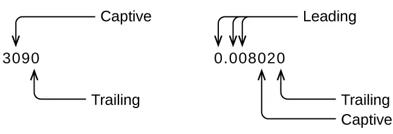
Starting with the first nonzero digit on the left, count this digit and all remaining digits to the right. This is the number of significant figures in the measurement unless the last digit is a trailing zero lying to the left of the decimal point.
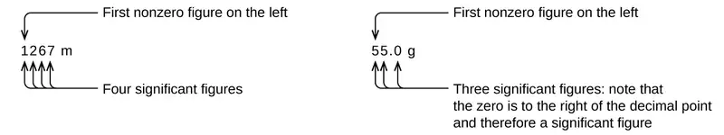
Captive zeros result from measurement and are therefore always significant. Leading zeros, however, are never significant—they merely tell us where the decimal point is located.
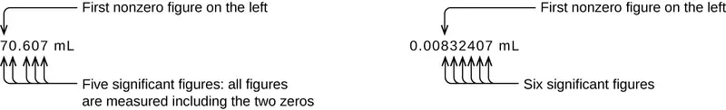
The leading zeros in this example are not significant. We could use exponential notation (as described in Appendix B) and express the number as 8.32407 \(\times\) 10−3; then the number 8.32407 contains all of the significant figures, and 10−3 locates the decimal point.
The number of significant figures is uncertain in a number that ends with a zero to the left of the decimal point location. The zeros in the measurement 1,300 grams could be significant or they could simply indicate where the decimal point is located. The ambiguity can be resolved with the use of exponential notation: 1.3 \(\times\) 103 (two significant figures), 1.30 \(\times\) 103 (three significant figures, if the tens place was measured), or 1.300 \(\times\) 103 (four significant figures, if the ones place was also measured). In cases where only the decimal-formatted number is available, it is prudent to assume that all trailing zeros are not significant.
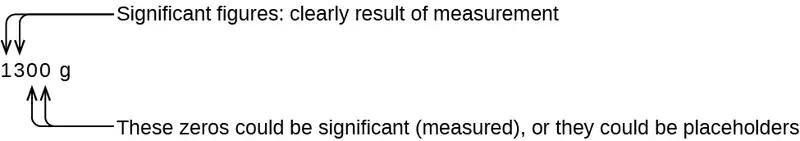
When determining significant figures, be sure to pay attention to reported values and think about the measurement and significant figures in terms of what is reasonable or likely when evaluating whether the value makes sense. For example, the official January 2014 census reported the resident population of the US as 317,297,725. Do you think the US population was correctly determined to the reported nine significant figures, that is, to the exact number of people? People are constantly being born, dying, or moving into or out of the country, and assumptions are made to account for the large number of people who are not actually counted. Because of these uncertainties, it might be more reasonable to expect that we know the population to within perhaps a million or so, in which case the population should be reported as 3.17 \(\times\) 108 people.
Significant Figures in Calculations¶
A second important principle of uncertainty is that results calculated from a measurement are at least as uncertain as the measurement itself. Take the uncertainty in measurements into account to avoid misrepresenting the uncertainty in calculated results. One way to do this is to report the result of a calculation with the correct number of significant figures, which is determined by the following three rules for rounding numbers:
- When adding or subtracting numbers, round the result to the same number of decimal places as the number with the least number of decimal places (the least certain value in terms of addition and subtraction).
- When multiplying or dividing numbers, round the result to the same number of digits as the number with the least number of significant figures (the least certain value in terms of multiplication and division).
- If the digit to be dropped (the one immediately to the right of the digit to be retained) is less than 5, “round down” and leave the retained digit unchanged; if it is more than 5, “round up” and increase the retained digit by 1. If the dropped digit is 5, and it’s either the last digit in the number or it’s followed only by zeros, round up or down, whichever yields an even value for the retained digit. If any nonzero digits follow the dropped 5, round up. (The last part of this rule may strike you as a bit odd, but it’s based on reliable statistics and is aimed at avoiding any bias when dropping the digit “5,” since it is equally close to both possible values of the retained digit.)
The following examples illustrate the application of this rule in rounding a few different numbers to three significant figures:
- 0.028675 rounds “up” to 0.0287 (the dropped digit, 7, is greater than 5)
- 18.3384 rounds “down” to 18.3 (the dropped digit, 3, is less than 5)
- 6.8752 rounds “up” to 6.88 (the dropped digit is 5, and a nonzero digit follows it)
- 92.85 rounds “down” to 92.8 (the dropped digit is 5, and the retained digit is even)
Let’s work through these rules with a few examples.
Example 1.3 Rounding Numbers
Round the following to the indicated number of significant figures:
(a) 31.57 (to two significant figures)
(b) 8.1649 (to three significant figures)
(c) 0.051065 (to four significant figures)
(d) 0.90275 (to four significant figures)
Solution
(a) 31.57 rounds “up” to 32 (the dropped digit is 5, and the retained digit is even)
(b) 8.1649 rounds “down” to 8.16 (the dropped digit, 4, is less than 5)
(c) 0.051065 rounds “down” to 0.05106 (the dropped digit is 5, and the retained digit is even)
(d) 0.90275 rounds “up” to 0.9028 (the dropped digit is 5, and the retained digit is even)
Check Your Learning
Round the following to the indicated number of significant figures:
(a) 0.424 (to two significant figures)
(b) 0.0038661 (to three significant figures)
(c) 421.25 (to four significant figures)
(d) 28,683.5 (to five significant figures)
Answer:
(a) 0.42; (b) 0.00387; (c) 421.2; (d) 28,684
Example 1.4 Addition and Subtraction with Significant Figures
Rule: When adding or subtracting numbers, round the result to the same number of decimal places as the number with the fewest decimal places (i.e., the least certain value in terms of addition and subtraction).
(a) Add 1.0023 g and 4.383 g.
(b) Subtract 421.23 g from 486 g.
Solution
(a) \(\frac{\begin{array}{c} \quad 1.0023\,g \\ \text{+ 4.383 g} \end{array}}{\hspace{1.5em}5.3853\,g}\)
Answer is 5.385 g (round to the thousandths place; three decimal places)
(b) \(\frac{\begin{array}{l} \ \quad 486\,g \\ -421.23\,g \end{array}}{\quad 64.77\,g}\)
Answer is 65 g (round to the ones place; no decimal places)
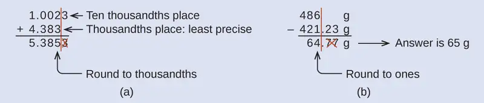
Check Your Learning
(a) Add 2.334 mL and 0.31 mL.
(b) Subtract 55.8752 m from 56.533 m.
Answer:
(a) 2.64 mL; (b) 0.658 m
Example 1.5 Multiplication and Division with Significant Figures
Rule: When multiplying or dividing numbers, round the result to the same number of digits as the number with the fewest significant figures (the least certain value in terms of multiplication and division).
(a) Multiply 0.6238 cm by 6.6 cm.
(b) Divide 421.23 g by 486 mL.
Solution
(a) \(\begin{array}{l} \text{0.6238 cm}\:\times\:6.6\:\text{cm}=4.11708\:\text{cm}^{2}\:\longrightarrow\:\text{result is}\:4.1\:\text{cm}^{2}\:(\text{round to two significant figures}) \\ \text{four significant figures}\:\times\:\text{two significant figures}\:\longrightarrow\:\text{two significant figures answer} \end{array}\)
(b) \(\begin{array}{l} \frac{\text{421.23 g}}{\text{486 mL}}\:=\text{0.866728... g/mL}\:\longrightarrow\:\text{result is 0.867 g/mL}\:(\text{round to three significant figures}) \\ \frac{\text{five significant figures}}{\text{three significant figures}}\:\longrightarrow\:\text{three significant figures answer} \end{array}\)
Check Your Learning
(a) Multiply 2.334 cm and 0.320 cm.
(b) Divide 55.8752 m by 56.53 s.
Answer:
(a) 0.747 cm2 (b) 0.9884 m/s
In the midst of all these technicalities, it is important to keep in mind the reason for these rules about significant figures and rounding—to correctly represent the certainty of the values reported and to ensure that a calculated result is not represented as being more certain than the least certain value used in the calculation.
Example 1.6 Calculation with Significant Figures
One common bathtub is 13.44 dm long, 5.920 dm wide, and 2.54 dm deep. Assume that the tub is rectangular and calculate its approximate volume in liters.
Solution
Check Your Learning
What is the density of a liquid with a mass of 31.1415 g and a volume of 30.13 cm3?
Answer:
1.034 g/mL
Example 1.7 Experimental Determination of Density Using Water Displacement
A piece of rebar is weighed and then submerged in a graduated cylinder partially filled with water, with results as shown.
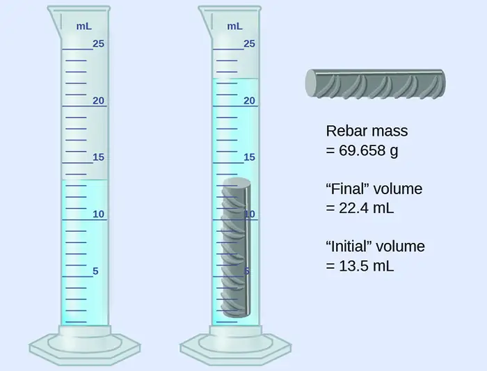
(a) Use these values to determine the density of this piece of rebar.
(b) Rebar is mostly iron. Does your result in (a) support this statement? How?
Solution
The volume of the piece of rebar is equal to the volume of the water displaced:
(rounded to the nearest 0.1 mL, per the rule for addition and subtraction)
The density is the mass-to-volume ratio:
(rounded to two significant figures, per the rule for multiplication and division)
From Table 1.4, the density of iron is 7.9 g/cm3, very close to that of rebar, which lends some support to the fact that rebar is mostly iron.
Check Your Learning
An irregularly shaped piece of a shiny yellowish material is weighed and then submerged in a graduated cylinder, with results as shown.
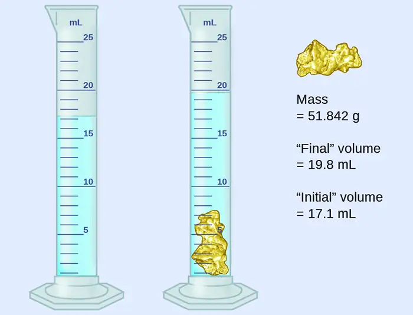
(a) Use these values to determine the density of this material.
(b) Do you have any reasonable guesses as to the identity of this material? Explain your reasoning.
Answer:
(a) 19 g/cm3; (b) It is likely gold; the right appearance for gold and very close to the density given for gold in Table 1.4.
Accuracy and Precision¶
Scientists typically make repeated measurements of a quantity to ensure the quality of their findings and to evaluate both the precision and the accuracy of their results. Measurements are said to be precise if they yield very similar results when repeated in the same manner. A measurement is considered accurate if it yields a result that is very close to the true or accepted value. Precise values agree with each other; accurate values agree with a true value. These characterizations can be extended to other contexts, such as the results of an archery competition (Figure 1.27).
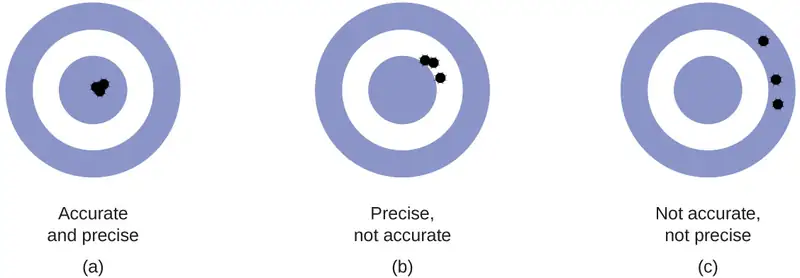
Suppose a quality control chemist at a pharmaceutical company is tasked with checking the accuracy and precision of three different machines that are meant to dispense 10 ounces (296 mL) of cough syrup into storage bottles. She proceeds to use each machine to fill five bottles and then carefully determines the actual volume dispensed, obtaining the results tabulated in Table 1.5.
Table 1.5
| Volume (mL) of Cough Medicine Delivered by 10-oz (296 mL) Dispensers | ||
|---|---|---|
| Dispenser #1 | Dispenser #2 | Dispenser #3 |
| 283.3 | 298.3 | 296.1 |
| 284.1 | 294.2 | 295.9 |
| 283.9 | 296.0 | 296.1 |
| 284.0 | 297.8 | 296.0 |
| 284.1 | 293.9 | 296.1 |
Considering these results, she will report that dispenser #1 is precise (values all close to one another, within a few tenths of a milliliter) but not accurate (none of the values are close to the target value of 296 mL, each being more than 10 mL too low). Results for dispenser #2 represent improved accuracy (each volume is less than 3 mL away from 296 mL) but worse precision (volumes vary by more than 4 mL). Finally, she can report that dispenser #3 is working well, dispensing cough syrup both accurately (all volumes within 0.1 mL of the target volume) and precisely (volumes differing from each other by no more than 0.2 mL).
1.6 Mathematical Treatment of Measurement Results¶
Learning Objectives
By the end of this section, you will be able to:
- Explain the dimensional analysis (factor label) approach to mathematical calculations involving quantities
- Use dimensional analysis to carry out unit conversions for a given property and computations involving two or more properties
It is often the case that a quantity of interest may not be easy (or even possible) to measure directly but instead must be calculated from other directly measured properties and appropriate mathematical relationships. For example, consider measuring the average speed of an athlete running sprints. This is typically accomplished by measuring the time required for the athlete to run from the starting line to the finish line, and the distance between these two lines, and then computing speed from the equation that relates these three properties:
An Olympic-quality sprinter can run 100 m in approximately 10 s, corresponding to an average speed of
(For this and the next calculation, assume the trailing zeros are significant digits.) Note that this simple arithmetic involves dividing the numbers of each measured quantity to yield the number of the computed quantity (100/10 = 10) and likewise dividing the units of each measured quantity to yield the unit of the computed quantity (m/s = m/s). Now, consider using this same relation to predict the time required for a person running at this speed to travel a distance of 25 m. The same relation among the three properties is used, but in this case, the two quantities provided are a speed (10 m/s) and a distance (25 m). To yield the sought property, time, the equation must be rearranged appropriately:
The time can then be computed as:
Again, arithmetic on the numbers (25/10 = 2.5) was accompanied by the same arithmetic on the units (m/(m/s) = s) to yield the number and unit of the result, 2.5 s. Note that, just as for numbers, when a unit is divided by an identical unit (in this case, m/m), the result is “1”—or, as commonly phrased, the units “cancel.”
These calculations are examples of a versatile mathematical approach known as dimensional analysis (or the factor-label method). Dimensional analysis is based on this premise: the units of quantities must be subjected to the same mathematical operations as their associated numbers. This method can be applied to computations ranging from simple unit conversions to more complex, multi-step calculations involving several different quantities.
Conversion Factors and Dimensional Analysis¶
A ratio of two equivalent quantities expressed with different measurement units can be used as a unit conversion factor. For example, the lengths of 2.54 cm and 1 in. are equivalent (by definition), and so a unit conversion factor may be derived from the ratio,
Several other commonly used conversion factors are given in Table 1.6.
Table 1.6
| Common Conversion Factors | ||
|---|---|---|
| Length | Volume | Mass |
| 1 m = 1.0936 yd | 1 L = 1.0567 qt | 1 kg = 2.2046 lb |
| 1 in. = 2.54 cm (exact) | 1 qt = 0.94635 L | 1 lb = 453.59 g2 |
| 1 km = 0.62137 mi | 1 ft3 = 28.317 L | 1 (avoirdupois) oz = 28.349 g |
| 1 mi = 1609.3 m | 1 tbsp = 14.787 mL | 1 (troy) oz = 31.103 g |
When a quantity (such as distance in inches) is multiplied by an appropriate unit conversion factor, the quantity is converted to an equivalent value with different units (such as distance in centimeters). For example, a basketball player’s vertical jump of 34 inches can be converted to centimeters by:
Since this simple arithmetic involves quantities, the premise of dimensional analysis requires that we multiply both numbers and units. The numbers of these two quantities are multiplied to yield the number of the product quantity, 86, whereas the units are multiplied to yield \(\frac{\text{in.}\:\times\:\text{cm}}{\text{in.}}\). Just as for numbers, a ratio of identical units is also numerically equal to one, \(\frac{\text{in.}}{\text{in.}}\:=1{,}\) and the unit product thus simplifies to cm. (When identical units divide to yield a factor of 1, they are said to “cancel.”) Dimensional analysis may be used to confirm the proper application of unit conversion factors as demonstrated in the following example.
Example 1.8 Using a Unit Conversion Factor
The mass of a competition frisbee is 125 g. Convert its mass to ounces using the unit conversion factor derived from the relationship 1 oz = 28.349 g (Table 1.6).
Solution
Given the conversion factor, the mass in ounces may be derived using an equation similar to the one used for converting length from inches to centimeters.
The unit conversion factor may be represented as:
The correct unit conversion factor is the ratio that cancels the units of grams and leaves ounces.
Check Your Learning
Convert a volume of 9.345 qt to liters.
Answer:
8.844 L
Beyond simple unit conversions, the factor-label method can be used to solve more complex problems involving computations. Regardless of the details, the basic approach is the same—all the factors involved in the calculation must be appropriately oriented to ensure that their labels (units) will appropriately cancel and/or combine to yield the desired unit in the result. As your study of chemistry continues, you will encounter many opportunities to apply this approach.
Example 1.9 Computing Quantities from Measurement Results and Known Mathematical Relations
What is the density of common antifreeze in units of g/mL? A 4.00-qt sample of the antifreeze weighs 9.26 lb.
Solution
Since \(\text{density}\:=\:\frac{\text{mass}}{\text{volume}}\), we need to divide the mass in grams by the volume in milliliters. In general: the number of units of B = the number of units of A \(\times\) unit conversion factor. The necessary conversion factors are given in Table 1.6: 1 lb = 453.59 g; 1 L = 1.0567 qt; 1 L = 1,000 mL. Mass may be converted from pounds to grams as follows:
Volume may be converted from quarts to milliliters via two steps:
-
Convert quarts to liters.
\[ 4.00\:\cancel{\text{qt}}\:\times\:\frac{\text{1 L}}{1.0567\:\cancel{\text{qt}}}\:=\text{3.78 L} \] -
Convert liters to milliliters.
\[ 3.78\:\cancel{\text{L}}\:\times\:\frac{\text{1000 mL}}{1\:\cancel{\text{L}}}\:=3.78\:\times\:{10}^{3}\:\text{mL} \]
Then,
Alternatively, the calculation could be set up in a way that uses three unit conversion factors sequentially as follows:
Check Your Learning
What is the volume in liters of 1.000 oz, given that 1 L = 1.0567 qt and 1 qt = 32 oz (exactly)?
Answer:
2.957 × 10−2 L
Example 1.10 Computing Quantities from Measurement Results and Known Mathematical Relations
While being driven from Philadelphia to Atlanta, a distance of about 1250 km, a 2014 Lamborghini Aventador Roadster uses 213 L gasoline.
(a) What (average) fuel economy, in miles per gallon, did the Roadster get during this trip?
(b) If gasoline costs $3.80 per gallon, what was the fuel cost for this trip?
Solution
(a) First convert distance from kilometers to miles:
and then convert volume from liters to gallons:
Finally,
Alternatively, the calculation could be set up in a way that uses all the conversion factors sequentially, as follows:
(b) Using the previously calculated volume in gallons, we find:
Check Your Learning
A Toyota Prius Hybrid uses 59.7 L gasoline to drive from San Francisco to Seattle, a distance of 1300 km (two significant digits).
(a) What (average) fuel economy, in miles per gallon, did the Prius get during this trip?
(b) If gasoline costs $3.90 per gallon, what was the fuel cost for this trip?
Answer:
(a) 51 mpg; (b) $62
Conversion of Temperature Units¶
We use the word temperature to refer to the hotness or coldness of a substance. One way we measure a change in temperature is to use the fact that most substances expand when their temperature increases and contract when their temperature decreases. The liquid in a common glass thermometer changes its volume as the temperature changes, and the position of the trapped liquid's surface along a printed scale may be used as a measure of temperature.
Temperature scales are defined relative to selected reference temperatures: Two of the most commonly used are the freezing and boiling temperatures of water at a specified atmospheric pressure. On the Celsius scale, 0 °C is defined as the freezing temperature of water and 100 °C as the boiling temperature of water. The space between the two temperatures is divided into 100 equal intervals, which we call degrees. On the Fahrenheit scale, the freezing point of water is defined as 32 °F and the boiling temperature as 212 °F. The space between these two points on a Fahrenheit thermometer is divided into 180 equal parts (degrees).
Defining the Celsius and Fahrenheit temperature scales as described in the previous paragraph results in a slightly more complex relationship between temperature values on these two scales than for different units of measure for other properties. Most measurement units for a given property are directly proportional to one another (y = mx). Using familiar length units as one example:
where y = length in feet, x = length in inches, and the proportionality constant, m, is the conversion factor. The Celsius and Fahrenheit temperature scales, however, do not share a common zero point, and so the relationship between these two scales is a linear one rather than a proportional one (y = mx + b). Consequently, converting a temperature from one of these scales into the other requires more than simple multiplication by a conversion factor, m; it also must take into account differences in the scales’ zero points (b).
The linear equation relating Celsius and Fahrenheit temperatures is easily derived from the two temperatures used to define each scale. Representing the Celsius temperature as x and the Fahrenheit temperature as y, the slope, m, is computed to be:
The y-intercept of the equation, b, is then calculated using either of the equivalent temperature pairs, (100 °C, 212 °F) or (0 °C, 32 °F), as:
The equation relating the temperature (T) scales is then:
An abbreviated form of this equation that omits the measurement units is:
Rearrangement of this equation yields the form useful for converting from Fahrenheit to Celsius:
As mentioned earlier in this chapter, the SI unit of temperature is the kelvin (K). Unlike the Celsius and Fahrenheit scales, the kelvin scale is an absolute temperature scale in which 0 (zero) K corresponds to the lowest temperature that can theoretically be achieved. Since the kelvin temperature scale is absolute, a degree symbol is not included in the unit abbreviation, K. The early 19th-century discovery of the relationship between a gas’s volume and temperature suggested that the volume of a gas would be zero at −273.15 °C. In 1848, British physicist William Thompson, who later adopted the title of Lord Kelvin, proposed an absolute temperature scale based on this concept (further treatment of this topic is provided in this text’s chapter on gases).
The freezing temperature of water on this scale is 273.15 K and its boiling temperature is 373.15 K. Notice the numerical difference in these two reference temperatures is 100, the same as for the Celsius scale, and so the linear relation between these two temperature scales will exhibit a slope of \(1\:\frac{\text{K}}{\text{°C}}\). Following the same approach, the equations for converting between the kelvin and Celsius temperature scales are derived to be:
The 273.15 in these equations has been determined experimentally, so it is not exact. Figure 1.28 shows the relationship among the three temperature scales.
![A thermometer is shown for the Fahrenheit, Celsius and Kelvin scales. Under the Fahrenheit scale, the boiling point of water is 212 degrees while the freezing point of water is 32 degrees. Therefore, there are 180 Fahrenheit degrees between the boiling point of water and the freezing point of water. Under the Celsius scale, the boiling point of water is 100 degrees while the freezing point of water is 0 degrees. Therefore, there are 100 Celsius degrees between the boiling point and freezing point of water. Under the kelvin scale, the boiling point of water is 373.15 K, while the freezing point of water is 273.15 K. 233.15 K is equal to negative 40 degrees Celsius, which is also equal to negative 40 degrees Fahrenheit.](img/cnx-chem-01-06-tempscales.webp)
Although the kelvin (absolute) temperature scale is the official SI temperature scale, Celsius is commonly used in many scientific contexts and is the scale of choice for nonscience contexts in almost all areas of the world. Very few countries (the U.S. and its territories, the Bahamas, Belize, Cayman Islands, and Palau) still use Fahrenheit for weather, medicine, and cooking.
Example 1.11 Conversion from Celsius
Normal body temperature has been commonly accepted as 37.0 °C (although it varies depending on time of day and method of measurement, as well as among individuals). What is this temperature on the kelvin scale and on the Fahrenheit scale?
Solution
Check Your Learning
Convert 80.92 °C to K and °F.
Answer:
354.07 K, 177.7 °F
Example 1.12 Conversion from Fahrenheit
Baking a ready-made pizza calls for an oven temperature of 450 °F. If you are in Europe, and your oven thermometer uses the Celsius scale, what is the setting? What is the kelvin temperature?
Solution
Check Your Learning
Convert 50 °F to °C and K.
Answer:
10 °C, 280 K
Chapter Review¶
Key Terms¶
- accuracy
- how closely a measurement aligns with a correct value
- atom
- smallest particle of an element that can enter into a chemical combination
- Celsius (°C)
- unit of temperature; water freezes at 0 °C and boils at 100 °C on this scale
- chemical change
- change producing a different kind of matter from the original kind of matter
- chemical property
- behavior that is related to the change of one kind of matter into another kind of matter
- chemistry
- study of the composition, properties, and interactions of matter
- compound
- pure substance that can be decomposed into two or more elements
- cubic centimeter (cm3 or cc)
- volume of a cube with an edge length of exactly 1 cm
- cubic meter (m3)
- SI unit of volume
- density
- ratio of mass to volume for a substance or object
- dimensional analysis
- (also, factor-label method) versatile mathematical approach that can be applied to computations ranging from simple unit conversions to more complex, multi-step calculations involving several different quantities
- element
- substance that is composed of a single type of atom; a substance that cannot be decomposed by a chemical change
- exact number
- number derived by counting or by definition
- extensive property
- property of a substance that depends on the amount of the substance
- Fahrenheit
- unit of temperature; water freezes at 32 °F and boils at 212 °F on this scale
- gas
- state in which matter has neither definite volume nor shape
- heterogeneous mixture
- combination of substances with a composition that varies from point to point
- homogeneous mixture
- (also, solution) combination of substances with a composition that is uniform throughout
- hypothesis
- tentative explanation of observations that acts as a guide for gathering and checking information
- intensive property
- property of a substance that is independent of the amount of the substance
- kelvin (K)
- SI unit of temperature; 273.15 K = 0 ºC
- kilogram (kg)
- standard SI unit of mass
- law
- statement that summarizes a vast number of experimental observations, and describes or predicts some aspect of the natural world
- law of conservation of matter
- when matter converts from one type to another or changes form, there is no detectable change in the total amount of matter present
- length
- measure of one dimension of an object
- liquid
- state of matter that has a definite volume but indefinite shape
- liter (L)
- (also, cubic decimeter) unit of volume; 1 L = 1,000 cm3
- macroscopic domain
- realm of everyday things that are large enough to sense directly by human sight and touch
- mass
- fundamental property indicating amount of matter
- matter
- anything that occupies space and has mass
- meter (m)
- standard metric and SI unit of length; 1 m = approximately 1.094 yards
- microscopic domain
- realm of things that are much too small to be sensed directly
- milliliter (mL)
- 1/1,000 of a liter; equal to 1 cm3
- mixture
- matter that can be separated into its components by physical means
- molecule
- bonded collection of two or more atoms of the same or different elements
- physical change
- change in the state or properties of matter that does not involve a change in its chemical composition
- physical property
- characteristic of matter that is not associated with any change in its chemical composition
- plasma
- gaseous state of matter containing a large number of electrically charged atoms and/or molecules
- precision
- how closely a measurement matches the same measurement when repeated
- pure substance
- homogeneous substance that has a constant composition
- rounding
- procedure used to ensure that calculated results properly reflect the uncertainty in the measurements used in the calculation
- scientific method
- path of discovery that leads from question and observation to law or hypothesis to theory, combined with experimental verification of the hypothesis and any necessary modification of the theory
- second (s)
- SI unit of time
- SI units (International System of Units)
- standards fixed by international agreement in the International System of Units (Le Système International d’Unités)
- significant figures
- (also, significant digits) all of the measured digits in a determination, including the uncertain last digit
- solid
- state of matter that is rigid, has a definite shape, and has a fairly constant volume
- symbolic domain
- specialized language used to represent components of the macroscopic and microscopic domains, such as chemical symbols, chemical formulas, chemical equations, graphs, drawings, and calculations
- temperature
- intensive property representing the hotness or coldness of matter
- theory
- well-substantiated, comprehensive, testable explanation of a particular aspect of nature
- uncertainty
- estimate of amount by which measurement differs from true value
- unit
- standard of comparison for measurements
- unit conversion factor
- ratio of equivalent quantities expressed with different units; used to convert from one unit to a different unit
- volume
- amount of space occupied by an object
- weight
- force that gravity exerts on an object
Key Equations¶
1.4 Measurements¶
| \(\text{density}=\:\frac{\text{mass}}{\text{volume}}\) |
1.6 Mathematical Treatment of Measurement Results¶
| \(T_{\text{°C}}=\:\frac{5}{9}\:\times\:(T_{\text{°F}}-32)\) |
| \(T_{\text{°F}}=\:\left( \frac{9}{5}\:\times\:T_{\text{°C}} \right)+32\) |
| \(T_{\text{K}}=\text{°C}+273.15\) |
| \(T_{\text{°C}}=\text{K}-273.15\) |
Key Concepts and Summary¶
1.1 Chemistry in Context¶
Chemistry deals with the composition, structure, and properties of matter, and the ways by which various forms of matter may be interconverted. Thus, it occupies a central place in the study and practice of science and technology. Chemists use the scientific method to perform experiments, pose hypotheses, and formulate laws and develop theories, so that they can better understand the behavior of the natural world. To do so, they operate in the macroscopic, microscopic, and symbolic domains. Chemists measure, analyze, purify, and synthesize a wide variety of substances that are important to our lives.
1.2 Phases and Classification of Matter¶
Matter is anything that occupies space and has mass. The basic building block of matter is the atom, the smallest unit of an element that can enter into combinations with atoms of the same or other elements. In many substances, atoms are combined into molecules. On earth, matter commonly exists in three states: solids, of fixed shape and volume; liquids, of variable shape but fixed volume; and gases, of variable shape and volume. Under high-temperature conditions, matter also can exist as a plasma. Most matter is a mixture: It is composed of two or more types of matter that can be present in varying amounts and can be separated by physical means. Heterogeneous mixtures vary in composition from point to point; homogeneous mixtures have the same composition from point to point. Pure substances consist of only one type of matter. A pure substance can be an element, which consists of only one type of atom and cannot be broken down by a chemical change, or a compound, which consists of two or more types of atoms.
1.3 Physical and Chemical Properties¶
All substances have distinct physical and chemical properties, and may undergo physical or chemical changes. Physical properties, such as hardness and boiling point, and physical changes, such as melting or freezing, do not involve a change in the composition of matter. Chemical properties, such flammability and acidity, and chemical changes, such as rusting, involve production of matter that differs from that present beforehand.
Measurable properties fall into one of two categories. Extensive properties depend on the amount of matter present, for example, the mass of gold. Intensive properties do not depend on the amount of matter present, for example, the density of gold. Heat is an example of an extensive property, and temperature is an example of an intensive property.
1.4 Measurements¶
Measurements provide quantitative information that is critical in studying and practicing chemistry. Each measurement has an amount, a unit for comparison, and an uncertainty. Measurements can be represented in either decimal or scientific notation. Scientists primarily use SI (International System) units such as meters, seconds, and kilograms, as well as derived units, such as liters (for volume) and g/cm3 (for density). In many cases, it is convenient to use prefixes that yield fractional and multiple units, such as microseconds (10−6 seconds) and megahertz (106 hertz), respectively.
1.5 Measurement Uncertainty, Accuracy, and Precision¶
Quantities can be defined or measured. Measured quantities have an associated uncertainty that is represented by the number of significant figures in the quantity’s number. The uncertainty of a calculated quantity depends on the uncertainties in the quantities used in the calculation and is reflected in how the value is rounded. Quantities are characterized with regard to accuracy (closeness to a true or accepted value) and precision (variation among replicate measurement results).
1.6 Mathematical Treatment of Measurement Results¶
Measurements are made using a variety of units. It is often useful or necessary to convert a measured quantity from one unit into another. These conversions are accomplished using unit conversion factors, which are derived by simple applications of a mathematical approach called the factor-label method or dimensional analysis. This strategy is also employed to calculate sought quantities using measured quantities and appropriate mathematical relations.
Exercises¶
1.1 Chemistry in Context¶
1. Explain how you could experimentally determine whether the outside temperature is higher or lower than 0 °C (32 °F) without using a thermometer.
Answer
Place a glass of water outside. It will freeze if the temperature is below 0 °C.
2. Identify each of the following statements as being most similar to a hypothesis, a law, or a theory. Explain your reasoning.
(a) Falling barometric pressure precedes the onset of bad weather.
(b) All life on earth has evolved from a common, primitive organism through the process of natural selection.
(c) My truck’s gas mileage has dropped significantly, probably because it’s due for a tune-up.
3. Identify each of the following statements as being most similar to a hypothesis, a law, or a theory. Explain your reasoning.
(a) The pressure of a sample of gas is directly proportional to the temperature of the gas.
(b) Matter consists of tiny particles that can combine in specific ratios to form substances with specific properties.
(c) At a higher temperature, solids (such as salt or sugar) will dissolve better in water.
Answer
(a) law (states a consistently observed phenomenon, can be used for prediction); (b) theory (a widely accepted explanation of the behavior of matter); (c) hypothesis (a tentative explanation, can be investigated by experimentation)
4. Identify each of the underlined items as a part of either the macroscopic domain, the microscopic domain, or the symbolic domain of chemistry. For any in the symbolic domain, indicate whether they are symbols for a macroscopic or a microscopic feature.
(a) The mass of a lead pipe is 14 lb.
(b) The mass of a certain chlorine atom is 35 amu.
(c) A bottle with a label that reads Al contains aluminum metal.
(d) Al is the symbol for an aluminum atom.
5. Identify each of the underlined items as a part of either the macroscopic domain, the microscopic domain, or the symbolic domain of chemistry. For those in the symbolic domain, indicate whether they are symbols for a macroscopic or a microscopic feature.
(a) A certain molecule contains one H atom and one Cl atom.
(b) Copper wire has a density of about 8 g/cm3.
(c) The bottle contains 15 grams of Ni powder.
(d) A sulfur molecule is composed of eight sulfur atoms.
Answer
(a) symbolic, microscopic; (b) macroscopic; (c) symbolic, macroscopic; (d) microscopic
6. According to one theory, the pressure of a gas increases as its volume decreases because the molecules in the gas have to move a shorter distance to hit the walls of the container. Does this theory follow a macroscopic or microscopic description of chemical behavior? Explain your answer.
7. The amount of heat required to melt 2 lbs of ice is twice the amount of heat required to melt 1 lb of ice. Is this observation a macroscopic or microscopic description of chemical behavior? Explain your answer.
Answer
Macroscopic. The heat required is determined from macroscopic properties.
1.2 Phases and Classification of Matter¶
8. Why is an object’s mass, rather than its weight, used to indicate the amount of matter it contains?
9. What properties distinguish solids from liquids? Liquids from gases? Solids from gases?
Answer
Liquids can change their shape (flow); solids can’t. Gases can undergo large volume changes as pressure changes; liquids do not. Gases flow and change volume; solids do not.
10. How does a heterogeneous mixture differ from a homogeneous mixture? How are they similar?
11. How does a homogeneous mixture differ from a pure substance? How are they similar?
Answer
The mixture can have a variety of compositions; a pure substance has a definite composition. Both have the same composition from point to point.
12. How does an element differ from a compound? How are they similar?
13. How do molecules of elements and molecules of compounds differ? In what ways are they similar?
Answer
Molecules of elements contain only one type of atom; molecules of compounds contain two or more types of atoms. They are similar in that both are comprised of two or more atoms chemically bonded together.
14. How does an atom differ from a molecule? In what ways are they similar?
15. Many of the items you purchase are mixtures of pure compounds. Select three of these commercial products and prepare a list of the ingredients that are pure compounds.
Answer
Answers will vary. Sample answer: Gatorade contains water, sugar, dextrose, citric acid, salt, sodium chloride, monopotassium phosphate, and sucrose acetate isobutyrate.
16. Classify each of the following as an element, a compound, or a mixture:
(a) copper
(b) water
(c) nitrogen
(d) sulfur
(e) air
(f) sucrose
(g) a substance composed of molecules each of which contains two iodine atoms
(h) gasoline
17. Classify each of the following as an element, a compound, or a mixture:
(a) iron
(b) oxygen
(c) mercury oxide
(d) pancake syrup
(e) carbon dioxide
(f) a substance composed of molecules each of which contains one hydrogen atom and one chlorine atom
(g) baking soda
(h) baking powder
Answer
(a) element; (b) element; (c) compound; (d) mixture; (e) compound; (f) compound; (g) compound; (h) mixture
18. A sulfur atom and a sulfur molecule are not identical. What is the difference?
19. How are the molecules in oxygen gas, the molecules in hydrogen gas, and water molecules similar? How do they differ?
Answer
In each case, a molecule consists of two or more combined atoms. They differ in that the types of atoms change from one substance to the next.
20. Why are astronauts in space said to be “weightless,” but not “massless”?
21. Prepare a list of the principal chemicals consumed and produced during the operation of an automobile.
Answer
Gasoline (a mixture of compounds), oxygen, and to a lesser extent, nitrogen are consumed. Carbon dioxide and water are the principal products. Carbon monoxide and nitrogen oxides are produced in lesser amounts.
22. Matter is everywhere around us. Make a list by name of fifteen different kinds of matter that you encounter every day. Your list should include (and label at least one example of each) the following: a solid, a liquid, a gas, an element, a compound, a homogenous mixture, a heterogeneous mixture, and a pure substance.
23. When elemental iron corrodes it combines with oxygen in the air to ultimately form red brown iron(III) oxide called rust. (a) If a shiny iron nail with an initial mass of 23.2 g is weighed after being coated in a layer of rust, would you expect the mass to have increased, decreased, or remained the same? Explain. (b) If the mass of the iron nail increases to 24.1 g, what mass of oxygen combined with the iron?
Answer
(a) Increased as it would have combined with oxygen in the air thus increasing the amount of matter and therefore the mass. (b) 0.9 g
24. As stated in the text, convincing examples that demonstrate the law of conservation of matter outside of the laboratory are few and far between. Indicate whether the mass would increase, decrease, or stay the same for the following scenarios where chemical reactions take place:
(a) Exactly one pound of bread dough is placed in a baking tin. The dough is cooked in an oven at 350 °F releasing a wonderful aroma of freshly baked bread during the cooking process. Is the mass of the baked loaf less than, greater than, or the same as the one pound of original dough? Explain.
(b) When magnesium burns in air a white flaky ash of magnesium oxide is produced. Is the mass of magnesium oxide less than, greater than, or the same as the original piece of magnesium? Explain.
(c) Antoine Lavoisier, the French scientist credited with first stating the law of conservation of matter, heated a mixture of tin and air in a sealed flask to produce tin oxide. Did the mass of the sealed flask and contents decrease, increase, or remain the same after the heating?
25. Yeast converts glucose to ethanol and carbon dioxide during anaerobic fermentation as depicted in the simple chemical equation here:
(a) If 200.0 g of glucose is fully converted, what will be the total mass of ethanol and carbon dioxide produced?
(b) If the fermentation is carried out in an open container, would you expect the mass of the container and contents after fermentation to be less than, greater than, or the same as the mass of the container and contents before fermentation? Explain.
(c) If 97.7 g of carbon dioxide is produced, what mass of ethanol is produced?
Answer
(a) 200.0 g; (b) The mass of the container and contents would decrease as carbon dioxide is a gaseous product and would leave the container. (c) 102.3 g
1.3 Physical and Chemical Properties¶
26. Classify the six underlined properties in the following paragraph as chemical or physical:
Fluorine is a pale yellow gas that reacts with most substances. The free element melts at −220 °C and boils at −188 °C. Finely divided metals burn in fluorine with a bright flame. Nineteen grams of fluorine will react with 1.0 gram of hydrogen.
27. Classify each of the following changes as physical or chemical:
(a) condensation of steam
(b) burning of gasoline
(c) souring of milk
(d) dissolving of sugar in water
(e) melting of gold
Answer
(a) physical; (b) chemical; (c) chemical; (d) physical; (e) physical
28. Classify each of the following changes as physical or chemical:
(a) coal burning
(b) ice melting
(c) mixing chocolate syrup with milk
(d) explosion of a firecracker
(e) magnetizing of a screwdriver
29. The volume of a sample of oxygen gas changed from 10 mL to 11 mL as the temperature changed. Is this a chemical or physical change?
Answer
physical
30. A 2.0-liter volume of hydrogen gas combined with 1.0 liter of oxygen gas to produce 2.0 liters of water vapor. Does oxygen undergo a chemical or physical change?
31. Explain the difference between extensive properties and intensive properties.
Answer
The value of an extensive property depends upon the amount of matter being considered, whereas the value of an intensive property is the same regardless of the amount of matter being considered.
32. Identify the following properties as either extensive or intensive.
(a) volume
(b) temperature
(c) humidity
(d) heat
(e) boiling point
33. The density (d) of a substance is an intensive property that is defined as the ratio of its mass (m) to its volume (V).
Considering that mass and volume are both extensive properties, explain why their ratio, density, is intensive.
Answer
Being extensive properties, both mass and volume are directly proportional to the amount of substance under study. Dividing one extensive property by another will in effect “cancel” this dependence on amount, yielding a ratio that is independent of amount (an intensive property).
1.4 Measurements¶
34. Is one liter about an ounce, a pint, a quart, or a gallon?
35. Is a meter about an inch, a foot, a yard, or a mile?
Answer
about a yard
36. Indicate the SI base units or derived units that are appropriate for the following measurements:
(a) the length of a marathon race (26 miles 385 yards)
(b) the mass of an automobile
(c) the volume of a swimming pool
(d) the speed of an airplane
(e) the density of gold
(f) the area of a football field
(g) the maximum temperature at the South Pole on April 1, 1913
37. Indicate the SI base units or derived units that are appropriate for the following measurements:
(a) the mass of the moon
(b) the distance from Dallas to Oklahoma City
(c) the speed of sound
(d) the density of air
(e) the temperature at which alcohol boils
(f) the area of the state of Delaware
(g) the volume of a flu shot or a measles vaccination
Answer
(a) kilograms; (b) meters; (c) meters/second; (d) kilograms/cubic meter; (e) kelvin; (f) square meters; (g) cubic meters
38. Give the name and symbol of the prefixes used with SI units to indicate multiplication by the following exact quantities.
(a) 103
(b) 10−2
(c) 0.1
(d) 10−3
(e) 1,000,000
(f) 0.000001
39. Give the name of the prefix and the quantity indicated by the following symbols that are used with SI base units.
(a) c
(b) d
(c) G
(d) k
(e) m
(f) n
(g) p
(h) T
Answer
(a) centi-, \(\times\) 10−2; (b) deci-, \(\times\) 10−1; (c) Giga-, \(\times\) 109; (d) kilo-, \(\times\) 103; (e) milli-, \(\times\) 10−3; (f) nano-, \(\times\) 10−9; (g) pico-, \(\times\) 10−12; (h) tera-, \(\times\) 1012
40. A large piece of jewelry has a mass of 132.6 g. A graduated cylinder initially contains 48.6 mL water. When the jewelry is submerged in the graduated cylinder, the total volume increases to 61.2 mL.
(a) Determine the density of this piece of jewelry.
(b) Assuming that the jewelry is made from only one substance, what substance is it likely to be? Explain.
41. Visit this density simulation and click the "turn fluid into water" button to adjust the density of liquid in the beaker to 1.00 g/mL.
(a) Use the water displacement approach to measure the mass and volume of the unknown material (select the green block with question marks).
(b) Use the measured mass and volume data from step (a) to calculate the density of the unknown material.
(c) Assuming this material is a widely available copper-containing gemstone, what is its likely identity? Compare the measured density to the values tabulated at this gemstone density guide.
(d) How are mass and density related for blocks of the same volume?
Answer
(a) m = 18.58 g, V = 5.7 mL; (b) d = 3.3 g/mL; (c) malachite (basic copper carbonate, d = 3.25—4.10 g/mL).
42. Visit this density simulation and click the "reset" button to ensure all simulator parameters are at their default values.
(a) Use the water displacement approach to measure the mass and volume of the red block.
(b) Use the measured mass and volume data from step (a) to calculate the density of the red block.
(c) Use the vertical green slide control to adjust the fluid density to values well above, then well below, and finally nearly equal to the density of the red block, reporting your observations.
43. Visit this density simulation and click the “turn fluid into water” button to adjust the density of liquid in the beaker to 1.00 g/mL. Change the block material to foam, and then wait patiently until the foam block stops bobbing up and down in the water.
(a) The foam block should be floating on the surface of the water (that is, only partially submerged). What is the volume of water displaced?
(b) Use the water volume from part (a) and the density of water (1.00 g/mL) to calculate the mass of water displaced.
(c) Remove and weigh the foam block. How does the block’s mass compare to the mass of displaced water from part (b)?
Answer
(a) displaced water volume = 2.8 mL; (b) displaced water mass = 2.8 g; (c) The block mass is 2.76 g, essentially equal to the mass of displaced water (2.8 g) and consistent with Archimedes’ principle of buoyancy.
1.5 Measurement Uncertainty, Accuracy, and Precision¶
44. Express each of the following numbers in scientific notation with correct significant figures:
(a) 711.0
(b) 0.239
(c) 90743
(d) 134.2
(e) 0.05499
(f) 10000.0
(g) 0.000000738592
45. Express each of the following numbers in exponential notation with correct significant figures:
(a) 704
(b) 0.03344
(c) 547.9
(d) 22086
(e) 1000.00
(f) 0.0000000651
(g) 0.007157
Answer
(a) 7.04 \(\times\) 102; (b) 3.344 \(\times\) 10−2; (c) 5.479 \(\times\) 102; (d) 2.2086 \(\times\) 104; (e) 1.00000 \(\times\) 103; (f) 6.51 \(\times\) 10−8; (g) 7.157 \(\times\) 10−3
46. Indicate whether each of the following can be determined exactly or must be measured with some degree of uncertainty:
(a) the number of eggs in a basket
(b) the mass of a dozen eggs
(c) the number of gallons of gasoline necessary to fill an automobile gas tank
(d) the number of cm in 2 m
(e) the mass of a textbook
(f) the time required to drive from San Francisco to Kansas City at an average speed of 53 mi/h
47. Indicate whether each of the following can be determined exactly or must be measured with some degree of uncertainty:
(a) the number of seconds in an hour
(b) the number of pages in this book
(c) the number of grams in your weight
(d) the number of grams in 3 kilograms
(e) the volume of water you drink in one day
(f) the distance from San Francisco to Kansas City
Answer
(a) exact; (b) exact; (c) uncertain; (d) exact; (e) uncertain; (f) uncertain
48. How many significant figures are contained in each of the following measurements?
(a) 38.7 g
(b) 2 \(\times\) 1018 m
(c) 3,486,002 kg
(d) 9.74150 \(\times\) 10−4 J
(e) 0.0613 cm3
(f) 17.0 kg
(g) 0.01400 g/mL
49. How many significant figures are contained in each of the following measurements?
(a) 53 cm
(b) 2.05 \(\times\) 108 m
(c) 86,002 J
(d) 9.740 \(\times\) 104 m/s
(e) 10.0613 m3
(f) 0.17 g/mL
(g) 0.88400 s
Answer
(a) two; (b) three; (c) five; (d) four; (e) six; (f) two; (g) five
50. The following quantities were reported on the labels of commercial products. Determine the number of significant figures in each.
(a) 0.0055 g active ingredients
(b) 12 tablets
(c) 3% hydrogen peroxide
(d) 5.5 ounces
(e) 473 mL
(f) 1.75% bismuth
(g) 0.001% phosphoric acid
(h) 99.80% inert ingredients
51. Round off each of the following numbers to two significant figures:
(a) 0.436
(b) 9.000
(c) 27.2
(d) 135
(e) 1.497 \(\times\) 10−3
(f) 0.445
Answer
(a) 0.44; (b) 9.0; (c) 27; (d) 140; (e) 1.5 \(\times\) 10−3; (f) 0.44
52. Round off each of the following numbers to two significant figures:
(a) 517
(b) 86.3
(c) 6.382 \(\times\) 103
(d) 5.0008
(e) 22.497
(f) 0.885
53. Perform the following calculations and report each answer with the correct number of significant figures.
(a) 628 \(\times\) 342
(b) (5.63 \(\times\) 102) \(\times\) (7.4 \(\times\) 103)
(c) \(\frac{28.0}{13.483}\)
(d) 8119 \(\times\) 0.000023
(e) 14.98 + 27,340 + 84.7593
(f) 42.7 + 0.259
Answer
(a) 2.15 \(\times\) 105; (b) 4.2 \(\times\) 106; (c) 2.08; (d) 0.19; (e) 27,440; (f) 43.0
54. Perform the following calculations and report each answer with the correct number of significant figures.
(a) 62.8 \(\times\) 34
(b) 0.147 + 0.0066 + 0.012
(c) 38 \(\times\) 95 \(\times\) 1.792
(d) 15 – 0.15 – 0.6155
(e) \(8.78\:\times\:\left( \frac{0.0500}{0.478} \right)\)
(f) 140 + 7.68 + 0.014
(g) 28.7 – 0.0483
(h) \(\frac{(88.5-87.57)}{45.13}\)
55. Consider the results of the archery contest shown in this figure.
(a) Which archer is most precise?
(b) Which archer is most accurate?
(c) Who is both least precise and least accurate?
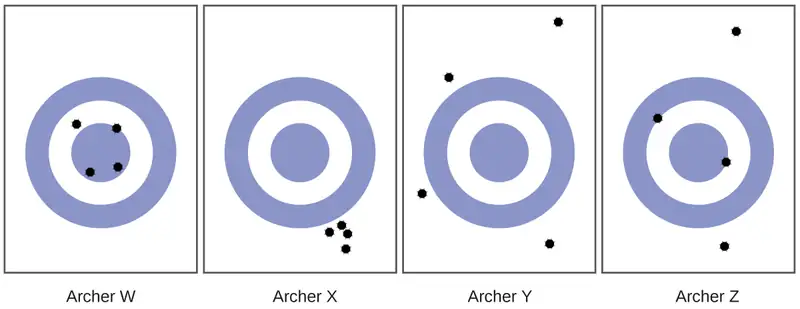
Answer
(a) Archer X; (b) Archer W; (c) Archer Y
56. Classify the following sets of measurements as accurate, precise, both, or neither.
(a) Checking for consistency in the weight of chocolate chip cookies: 17.27 g, 13.05 g, 19.46 g, 16.92 g
(b) Testing the volume of a batch of 25-mL pipettes: 27.02 mL, 26.99 mL, 26.97 mL, 27.01 mL
(c) Determining the purity of gold: 99.9999%, 99.9998%, 99.9998%, 99.9999%
1.6 Mathematical Treatment of Measurement Results¶
57. Write conversion factors (as ratios) for the number of:
(a) yards in 1 meter
(b) liters in 1 liquid quart
(c) pounds in 1 kilogram
Answer
(a) \(\frac{\text{1.0936 yd}}{\text{1 m}}\); (b) \(\frac{\text{0.94635 L}}{\text{1 qt}}\); (c) \(\frac{\text{2.2046 lb}}{\text{1 kg}}\)
58. Write conversion factors (as ratios) for the number of:
(a) kilometers in 1 mile
(b) liters in 1 cubic foot
(c) grams in 1 ounce
59. The label on a soft drink bottle gives the volume in two units: 2.0 L and 67.6 fl oz. Use this information to derive a conversion factor between the English and metric units. How many significant figures can you justify in your conversion factor?
Answer
\(\frac{\text{2.0 L}}{\text{67.6 fl oz}}\:=\:\frac{\text{0.030 L}}{\text{1 fl oz}}\)
Only two significant figures are justified.
60. The label on a box of cereal gives the mass of cereal in two units: 978 grams and 34.5 oz. Use this information to find a conversion factor between the English and metric units. How many significant figures can you justify in your conversion factor?
61. Soccer is played with a round ball having a circumference between 27 and 28 in. and a weight between 14 and 16 oz. What are these specifications in units of centimeters and grams?
Answer
68–71 cm; 400–450 g
62. A woman’s basketball has a circumference between 28.5 and 29.0 inches and a maximum weight of 20 ounces (two significant figures). What are these specifications in units of centimeters and grams?
63. How many milliliters of a soft drink are contained in a 12.0-oz can?
Answer
355 mL
64. A barrel of oil is exactly 42 gal. How many liters of oil are in a barrel?
65. The diameter of a red blood cell is about 3 \(\times\) 10−4 in. What is its diameter in centimeters?
Answer
8 \(\times\) 10−4 cm
66. The distance between the centers of the two oxygen atoms in an oxygen molecule is 1.21 \(\times\) 10−8 cm. What is this distance in inches?
67. Is a 197-lb weight lifter light enough to compete in a class limited to those weighing 90 kg or less?
Answer
yes; weight = 89.4 kg
68. A very good 197-lb weight lifter lifted 192 kg in a move called the clean and jerk. What was the mass of the weight lifted in pounds?
69. Many medical laboratory tests are run using 5.0 μL blood serum. What is this volume in milliliters?
Answer
5.0 \(\times\) 10−3 mL
70. If an aspirin tablet contains 325 mg aspirin, how many grams of aspirin does it contain?
71. Use scientific (exponential) notation to express the following quantities in terms of the SI base units in Table 1.2:
(a) 0.13 g
(b) 232 Gg
(c) 5.23 pm
(d) 86.3 mg
(e) 37.6 cm
(f) 54 μm
(g) 1 Ts
(h) 27 ps
(i) 0.15 mK
Answer
(a) 1.3 \(\times\) 10−4 kg; (b) 2.32 \(\times\) 108 kg; (c) 5.23 \(\times\) 10−12 m; (d) 8.63 \(\times\) 10−5 kg; (e) 3.76 \(\times\) 10−1 m; (f) 5.4 \(\times\) 10−5 m; (g) 1 \(\times\) 1012 s; (h) 2.7 \(\times\) 10−11 s; (i) 1.5 \(\times\) 10−4 K
72. Complete the following conversions between SI units.
(a) 612 g = ________ mg
(b) 8.160 m = ________ cm
(c) 3779 μg = ________ g
(d) 781 mL = ________ L
(e) 4.18 kg = ________ g
(f) 27.8 m = ________ km
(g) 0.13 mL = ________ L
(h) 1738 km = ________ m
(i) 1.9 Gg = ________ g
73. Gasoline is sold by the liter in many countries. How many liters are required to fill a 12.0-gal gas tank?
Answer
45.4 L
74. Milk is sold by the liter in many countries. What is the volume of exactly 1/2 gal of milk in liters?
75. A long ton is defined as exactly 2240 lb. What is this mass in kilograms?
Answer
1.0160 \(\times\) 103 kg
76. Make the conversion indicated in each of the following:
(a) the men’s world record long jump, 29 ft 4¼ in., to meters
(b) the greatest depth of the ocean, about 6.5 mi, to kilometers
(c) the area of the state of Oregon, 96,981 mi2, to square kilometers
(d) the volume of 1 gill (exactly 4 oz) to milliliters
(e) the estimated volume of the oceans, 330,000,000 mi3, to cubic kilometers.
(f) the mass of a 3525-lb car to kilograms
(g) the mass of a 2.3-oz egg to grams
77. Make the conversion indicated in each of the following:
(a) the length of a soccer field, 120 m (three significant figures), to feet
(b) the height of Mt. Kilimanjaro, at 19,565 ft, the highest mountain in Africa, to kilometers
(c) the area of an 8.5- × 11-inch sheet of paper in cm2
(d) the displacement volume of an automobile engine, 161 in.3, to liters
(e) the estimated mass of the atmosphere, 5.6 × 1015 tons, to kilograms
(f) the mass of a bushel of rye, 32.0 lb, to kilograms
(g) the mass of a 5.00-grain aspirin tablet to milligrams (1 grain = 0.00229 oz)
Answer
(a) 394 ft; (b) 5.9634 km; (c) 6.0 \(\times\) 102; (d) 2.64 L; (e) 5.1 \(\times\) 1018 kg; (f) 14.5 kg; (g) 324 mg
78. Many chemistry conferences have held a 50-Trillion Angstrom Run (two significant figures). How long is this run in kilometers and in miles? (1 Å = 1 \(\times\) 10−10 m)
79. A chemist’s 50-Trillion Angstrom Run (see Exercise 78) would be an archeologist’s 10,900 cubit run. How long is one cubit in meters and in feet? (1 Å = 1 \(\times\) 10−8 cm)
Answer
0.46 m; 1.5 ft/cubit
80. The gas tank of a certain luxury automobile holds 22.3 gallons according to the owner’s manual. If the density of gasoline is 0.8206 g/mL, determine the mass in kilograms and pounds of the fuel in a full tank.
81. As an instructor is preparing for an experiment, he requires 225 g phosphoric acid. The only container readily available is a 150-mL Erlenmeyer flask. Is it large enough to contain the acid, whose density is 1.83 g/mL?
Answer
Yes, the acid’s volume is 123 mL.
82. To prepare for a laboratory period, a student lab assistant needs 125 g of a compound. A bottle containing 1/4 lb is available. Did the student have enough of the compound?
83. A chemistry student is 159 cm tall and weighs 45.8 kg. What is her height in inches and weight in pounds?
Answer
62.6 in (about 5 ft 3 in.) and 101 lb
84. In a recent Grand Prix, the winner completed the race with an average speed of 229.8 km/h. What was his speed in miles per hour, meters per second, and feet per second?
85. Solve these problems about lumber dimensions.
(a) To describe to a European how houses are constructed in the US, the dimensions of “two-by-four” lumber must be converted into metric units. The thickness \(\times\) width \(\times\) length dimensions are 1.50 in. \(\times\) 3.50 in. \(\times\) 8.00 ft in the US. What are the dimensions in cm \(\times\) cm \(\times\) m?
(b) This lumber can be used as vertical studs, which are typically placed 16.0 in. apart. What is that distance in centimeters?
Answer
(a) 3.81 cm \(\times\) 8.89 cm \(\times\) 2.44 m; (b) 40.6 cm
86. The mercury content of a stream was believed to be above the minimum considered safe—1 part per billion (ppb) by weight. An analysis indicated that the concentration was 0.68 parts per billion. What quantity of mercury in grams was present in 15.0 L of the water, the density of which is 0.998 g/ml? \(\text{(1 ppb Hg}=\:\frac{\text{1 ng Hg}}{\text{1 g water}}\text{)}\)
87. Calculate the density of aluminum if 27.6 cm3 has a mass of 74.6 g.
Answer
2.70 g/cm3
88. Osmium is one of the densest elements known. What is its density if 2.72 g has a volume of 0.121 cm3?
89. Calculate these masses.
(a) What is the mass of 6.00 cm3 of mercury, density = 13.5939 g/cm3?
(b) What is the mass of 25.0 mL octane, density = 0.702 g/cm3?
Answer
(a) 81.6 g; (b) 17.6 g
90. Calculate these masses.
(a) What is the mass of 4.00 cm3 of sodium, density = 0.97 g/cm3 ?
(b) What is the mass of 125 mL gaseous chlorine, density = 3.16 g/L?
91. Calculate these volumes.
(a) What is the volume of 25 g iodine, density = 4.93 g/cm3?
(b) What is the volume of 3.28 g gaseous hydrogen, density = 0.089 g/L?
Answer
(a) 5.1 mL; (b) 37 L
92. Calculate these volumes.
(a) What is the volume of 11.3 g graphite, density = 2.25 g/cm3?
(b) What is the volume of 39.657 g bromine, density = 2.928 g/cm3?
93. Convert the boiling temperature of gold, 2966 °C, into degrees Fahrenheit and kelvin.
Answer
5371 °F, 3239 K
94. Convert the temperature of scalding water, 54 °C, into degrees Fahrenheit and kelvin.
95. Convert the temperature of the coldest area in a freezer, −10 °F, to degrees Celsius and kelvin.
Answer
−23 °C, 250 K
96. Convert the temperature of dry ice, −77 °C, into degrees Fahrenheit and kelvin.
97. Convert the boiling temperature of liquid ammonia, −28.1 °F, into degrees Celsius and kelvin.
Answer
−33.4 °C, 239.8 K
98. The label on a pressurized can of spray disinfectant warns against heating the can above 130 °F. What are the corresponding temperatures on the Celsius and kelvin temperature scales?
99. The weather in Europe was unusually warm during the summer of 1995. The TV news reported temperatures as high as 45 °C. What was the temperature on the Fahrenheit scale?
Answer
113 °F
Adapted from Chemistry 2e by OpenStax, licensed under CC BY 4.0. Access the original for free at openstax.org. Changes: converted to the web reading format of The Open Book Project.
-
For details see https://www.nist.gov/pml/weights-and-measures/si-units-mass ↩
-
Strictly speaking, the ounce and pound are units of weight, W (a force equal to the product of mass and gravitational acceleration, W = mg). The conversion relations in this table are commonly used to equate masses and weight assuming a nominal value for g at the surface of the earth. ↩